Greenpeace Nordic · Report · October 2026
Vanishing forests
(part 2): How Ikea drives destruction in the Boreal Forests
The irreversible loss – a Swedish case study
Field investigations by Greenpeace Nordic; continuity-forest status verified by Skydda Skogen.
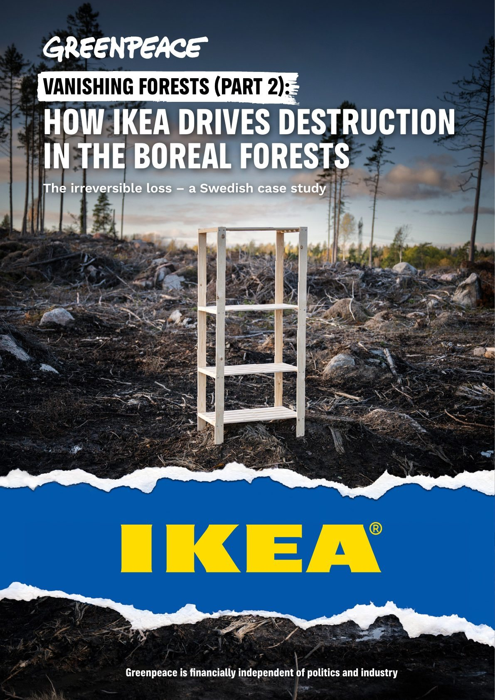
Download the printed report (PDF, 50 pages, 12 MB)
Vanishing Forests (Part 2)
Executive summary
An irreplaceable forest becomes a cheap shelf.
Ikea has built a global brand on its Swedish roots, exporting an image of Scandinavian design, simplicity and nature into homes around the world. But behind the iconic blue and yellow facade lies a hidden cost.
Greenpeace Nordic’s investigation exposes the realities of Ikea's wood supply chain in its home country of Sweden. It is a story of how forests of irreplaceable ecological value, urgently needed to defend us from the imminent threats of climate change and biodiversity loss, instead risk becoming everyday furniture.
By tracking timber from clear-cut forests within SCA's forest holdings to sawmills and tracing links to Ikea's manufacturing partners and products, Greenpeace Nordic found evidence connecting the destruction of forests in need of protection to the supply chain of Ikea’s popular HEJNE and IVAR shelving systems, as well as the MYDAL, NEIDEN and UTÅKER bedframes.
The findings stand in stark contrast to the company’s stated sustainability ambitions, such as the commitment to “reduce negative pressures and impacts on nature across the Ikea value chain, while contributing to the protection, improvement and enhancement of natural ecosystems in our sphere of influence”.1
SCA is one of Sweden’s largest forest companies, controversial for its numerous scandals, and a major wood supplier to Ikea. They operate within a forestry system that fails to protect forests with high conservation values, despite certification schemes and existing environmental regulations.
These include continuity forests, areas defined by authorities as having "natural values whose occurrence is explained by the fact that for a long time there have been suitable forest habitats and substrates in this particular forest or in its vicinity".2 Such forests provide habitats for threatened species and support ecological processes that cannot be recreated by planting new trees. Once these environments are destroyed, their ecological value may take centuries to recover, if ever.3
All forest areas linked to Ikea's supply chain in this investigation were mapped as continuity forests, according to official data from the Swedish Environmental Protection Agency. Moreover, documented records of protected and red-listed species were found.
Swedish authorities have warned that the loss of remaining continuity forests is effectively irreversible and must be stopped, calling for their long-term protection. At the current rate, these forests could be gone outside protected areas in only 26 years.4
Despite this alarming reality, the Swedish government continues to fall short of implementing its national and international climate and biodiversity commitments, failing to deliver the protection these irreplaceable forests urgently need.
Ikea has pledged to reduce its negative impacts on nature and use its global reach to influence the forestry industry. However, relying on legal compliance and FSC certification does not ensure that timber comes from forests where logging is ecologically acceptable.
Nor are broad sustainability commitments sufficient without measurable biodiversity targets and safeguards that address the condition of forests and the species they support.
The findings in this report demonstrate the need for Ikea to move beyond a compliance-based approach and take direct responsibility for the ecological consequences of its sourcing decisions.
As a major buyer of wood, Ikea can influence supplier practices, help shift the wider industry towards excluding timber from forests with irreplaceable ecological values such as continuity forests, and use its political influence to advocate for stronger forest protection policies and legislation.
In short, Ikea must act to protect our common home.
Greenpeace Nordic calls on Ikea to take four key actions:
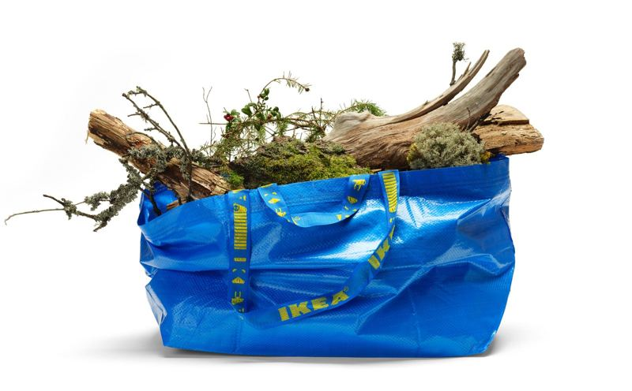
Introduction
The remaining old-growth and continuity forests in Sweden harbour ecological values shaped over millennia. Centuries-old trees still stand among complex forest structures, creating unique habitats that countless species depend on in a web of interconnected life.6
In a world currently heading for 2,8 degrees celsius global warming this century7, we need healthy, resilient forests to keep us and our children safe more than ever. But according to the Swedish Forest Agency, there might be none of these ecologically irreplaceable forests left outside protected areas within just a few decades.8
Forests cover approximately 70% of Sweden’s land area, making it the country’s largest land-use category.9 The majority of these forests, however, have been clearcut in the past. In essence, what we are looking at are often even-aged industrial plantations.10 Their value is measured in biomass for the forestry industry, while broader economic and ecological values are lost, due to their character as biological deserts.11
In contrast to these industrial forest landscapes, Sweden’s remaining continuity forests stand as lights of hope for the preservation of the country's natural heritage. Defined by their long unbroken continuity allowing ecological processes, natural values and complex ecosystems to build over time, they create conditions for forest life to thrive in ways that industrial plantations generally can not support.12 13
Due to the alarming situation, Swedish authorities have concluded that logging remaining continuity forests constitutes an irreversible loss and that the logging of these irreplaceable forests needs to stop. They describe the preservation and long-term protection of the remaining areas to be of “critical importance.”14
If not, even the authority fears those to be gone in just 26 years outside protected areas.15
Efforts to identify and protect these forests are undermined by a political system in which powerful forestry interests exert influence over forest policy, helping to maintain the status quo.16 The Swedish political leadership deliberately fails to implement national and international commitments concerning biodiversity and climate, delaying formal forest protection.17
The government's forest policy is generally based on self regulation.18 Large forest companies like SCA, an important wood supplier to Ikea, dominate19 and rely on clear cutting20 and even replanting with fast-growing species foreign to Sweden’s native flora, such as lodgepole pine (Pinus contorta)21.
With the current rate of habitat destruction there is no time to lose. No time to just wait for the needed policy changes. To stop the destruction of the remaining habitats, the market driven forest industry must adapt to ecological and economical realities: cutting down continuity forests is not a viable option. They need to stay out of Sweden's remaining forest treasures and actively support, not hinder, policy makers to legislate their strong protection.
Each year, at least 26 000 hectares of these irreplaceable forests are logged and entered into commercial supply chains.22 That in itself proves that hiding behind toothless forest regulation or certification schemes like the Forest Stewardship Council is not enough.
The world's largest furniture company Ikea is also one of the world’s largest buyers of wood products.23 Once founded in Sweden, Ikea procures 12 million cubic meters of fresh timber a year.24 Over 80% of this wood used in Ikea products comes from the EU, around 8% from Sweden.25
Ikea is a dominating market force with significant influence over how forests are managed.26 Ikea knows this. The company states it wants to use its “size and global reach to positively influence, and even transform, the forestry industry”.27
Their stated objective for 2030 is to “reduce negative pressures and impacts on nature across the Ikea value chain, while contributing to the protection, improvement and enhancement of natural ecosystems in our sphere of influence.”28
But Ikea fails to deliver.
By conducting field investigations on the ground and electronically tracking logs from clear-cut continuity forests in SCA’s forest holdings29 to its sawmills and then following the trail to Ikea’s stores in Sweden, Germany, the US, the investigation showed how trees that must remain standing risk becoming raw material for Ikea’s products.
SCA states to be Europe's largest private forest owner30 and is an important supplier of wood to Ikea.
The company has repeatedly faced criticism over logging forests with high conservation values31 32 33and how their practices come into conflict with the rights of indigenous Sámi communities.34 35This conduct has led market actors like global giants Nestlé, Zalando and L’Óreal to stop buying SCA's products.36 37 38
Ikea’s purchasing power and sourcing policies shape demand throughout the forestry sector. With that influence comes a responsibility to source responsibly. To maintain the trust of its millions of customers worldwide, immediate action is needed from Ikea.
It's time for Ikea to use its weight as one of SCA's and the Swedish forest industries key customers to halt the destruction of Sweden's remaining continuity forests.
Ikea must ensure that its products do not contribute to the destruction of forests that humanity needs to preserve our common home. It must strengthen its safeguards beyond legal compliance and certification, by demanding from suppliers that no continuity forests reach Ikea's supply chain, and use its considerable market and political influence to secure stronger forest protection.
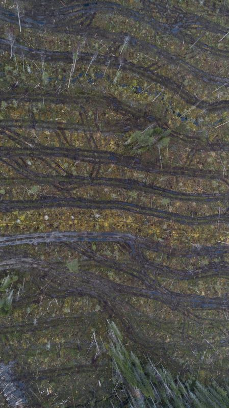
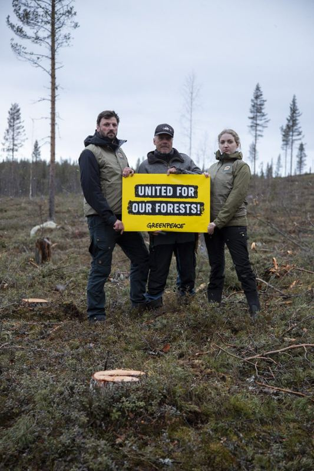
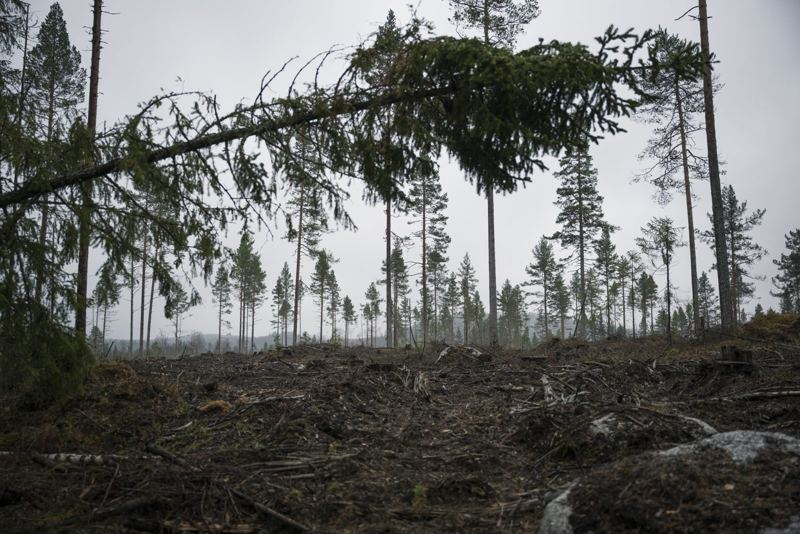
The State of Sweden’s Forests – urgent call for protection
The irreversible loss of forest biodiversity
All the life that makes a forest have an intrinsic value and a right to exist.
Healthy, resilient forests rich in biodiversity are also vital to human well-being and our economies. They provide essential ecosystem functions and services, including water purification, the provision of food, timber production, recreational opportunities, and protection against erosion and flooding.39 40
They are also generally better equipped to withstand and recover from climate-related disturbances, including droughts, storms, and insect outbreaks.41
Yet, despite its importance, forest biodiversity in Sweden is in a critical state. Many forest-dwelling species are threatened as their habitats have been lost, fragmented or degraded.42 The decline in forest biodiversity is primarily driven by intensive forestry, with clear-cutting as the dominant harvesting method.43
Currently, only 6 % of Sweden's productive forest44 landscape has formal protection.45 In its latest evaluation for 2027, the Swedish Forest Agency concluded that the national environmental quality objective Levande skogar (Sustainable Forests) has not been achieved and is showing a negative trend.46 Only 1 of the 15 forest habitat types assessed is found to have favourable conservation status.47
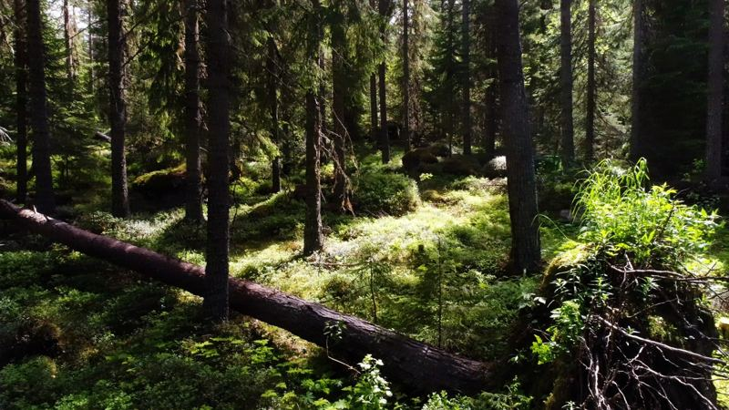
A particular concern is the ongoing loss of Sweden’s remaining continuity forests. They are defined by authorities as having "natural values whose occurrence is explained by the fact that for a long time there have been suitable forest habitats and substrates in this particular forest or in its vicinity".48 Unlike the majority of Sweden’s intensively managed forest landscape, they have not been clear-cut in recent history. It is their long and largely unbroken ecological continuity which makes them especially important for biodiversity.49 50
These forests contain ecological structures and habitats that can take centuries or millennia to develop, and which cannot be recreated within a foreseeable timeframe, if ever.51 Government authorities state that the logging of continuity forests “is in practice an irreversible loss”.52
According to the Swedish Red List 2025, forestry-related factors have a major negative impact on 1,744 red-listed species, with the lack of continuity forests alone having a major negative impact on nearly 900 species.53 The Swedish University of Agricultural Sciences (SLU) concludes that the loss of continuity forests is one of the main drivers of this decline of forest biodiversity in Sweden.54
In a report released in 202655, the Swedish Forest Agency (Skogsstyrelsen) states that “significant logging of forests with high conservation values and continuity forests results in irreversible losses for species conservation. According to the Agency, approximately 26,000 hectares of forest with known high conservation values and probable continuity forests are logged each year. At the current rate of logging and formal protection, the Agency estimates in this report, that there will be none of these ecologically irreplaceable forests left outside protected areas within just 26 years.
The scale of the problem is clearly illustrated by the gap between what is needed and what remains.
When natural habitats disappear, species lose the environments they need to survive. As habitats shrink and become fragmented, populations become smaller and more isolated. 20 percent of the pre-industrial area, the area of a habitat that existed before modern forestry, has often been used as a minimum reference level for forest habitat types. Going below this critical threshold significantly increases the risk of species extinction and ecosystem degradation.56
The Swedish Forest Agency estimates that, below the mountain forest boundary, an additional 1.56 million hectares of forest habitat with high biodiversity values need to be protected from logging, and in many cases restored, to reach even this minimum threshold of 20 percent. At the same time they conclude that only around 1.2 million hectares of known high conservation value forests or probable continuity forests remain without any form of protection in the same region.57
This clearly highlights a substantial gap between the estimated need for habitat conservation and the remaining unprotected forests with high biodiversity values or potential to develop such values.
Moreover, the agency states in the same report that they do not consider this minimum level of 20 percent to be enough. Many species need specific types of forest, and their survival also depends on habitat quality and whether different areas are connected. Climate change creates additional challenges. The Agency therefore calls in the report for the protection of at least 30 percent, in line with international biodiversity goals set by the CBD58 and the EU59. The aim is to give more species a better chance of survival and help maintain healthy, functioning ecosystems.
There is evidently no room for further losses. Every hectare lost widens the existing conservation gap.
The Swedish Forest Agency therefore concludes that all logging of known high conservation value forests and probable continuity forests needs to stop.60
The Climate Value
The importance of conserving Sweden’s forests extends beyond biodiversity. They serve as a major carbon sink61 and hold vast carbon stocks accumulated over long periods in living trees, dead wood and soils.62 63
Studies comparing intensively managed forests in Sweden with primary- and old growth forests, found that the latter stored over 70% more carbon, with soils accounting for the largest share of the difference.64 This highlights the importance of preserving forests with long ecological continuity, which can retain substantial carbon stocks over time.
Harvesting these forests by clear-cutting results in a double climate loss: it disrupts the forest’s function as a carbon sink65 and exposes wood waste left behind, as well as the soil carbon stocks accumulated over centuries, to significant degradation and loss.66
In addition, the majority of the harvested wood becomes short-lived products like paper and fuelwood, which release the carbon stored in them into the atmosphere as climate-heating CO2 after only a few years.67
Currently Sweden is falling short of its climate targets for the land-use sector. According to the European Commission’s 2025 projections, Sweden is expected to achieve only 58% of its targeted 2030 carbon removals in the land use and forestry sector.68
Safeguarding Sámi Culture
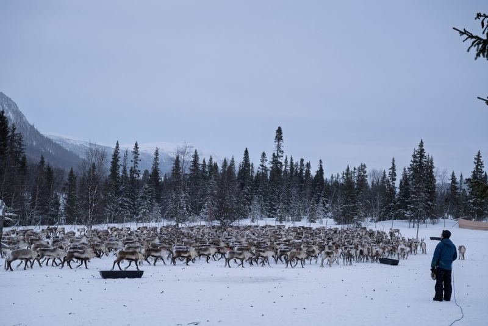
The relationship with land is central to Sámi culture. Sápmi, the traditional territory of the Sámi people, is deeply connected to Sámi history, identity, spirituality and worldview. The land is also essential for traditional Sámi livelihoods, hunting, fishing, reindeer herding and Sámi handicrafts (duodji).69
Intact and connected landscapes are key to ensure that Sámi traditions can be passed on to future generations and that Sámi culture can continue to develop in the ways that Sámi people themselves choose.70
Forests with long ecological continuity are particularly important to Sámi culture and nature-based reindeer herding.71 The abundance of arboreal lichen (lichen that grows on trees) is dependent on long forest continuity and older trees, and decreases significantly as old forests are clear-cut.72 Forests rich in ground lichen, which together with arboreal lichen provides important winter grazing for reindeer, have declined by more than 70% since the 1950s due to the forest industry’s large-scale conversion of the Swedish forest landscape.73
Their loss threatens reindeer herding and the continuity of Sámi cultural practices and livelihoods. Intact continuity forests are vital to safeguard Sámi cultural heritage and the landscapes that sustain it.
The unequal balance of power between forestry companies - like SCA - and Sámi reindeer herding communities (RHC’s) is a contemporary continuation of Sweden’s colonial abuses in Sápmi. These communities hold the right to practise reindeer herding and have lived sustainably off the lands of Sápmi since time immemorial, still it's largely the forestry companies that set the terms for how forestry is carried out. The system is structured in favour of the forestry industry.74
The internationally recognised principle of Free, Prior and Informed Consent (FPIC) is a way to counter the unequal power relations, meaning that consent is required for logging to proceed.75 This is a vital mechanism to uphold indigenous rights and ensure substantial influence from Indigenous Peoples, making forestry more sustainable and equitable.
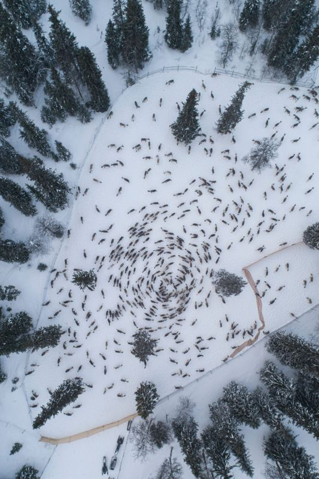
Swedish forest policy – deregulation and weakened forest protection
Sweden’s national targets and international commitments under frameworks such as the Kunming–Montreal Global Biodiversity Framework76, the EU Biodiversity Strategy77 and the Nature Restoration Regulation78 calls for decisive political action to halt biodiversity loss and protect and restore forest ecosystems.
These commitments include protecting at least 30% of the world’s land by 203079 with at least 10% strictly protected, including all primary and old-growth forests remaining in the European Union.80 81The EU has also committed to restore at least 20% of its land areas by 2030.82
The Swedish Forest Agency warns that, under the current situation, Sweden will fail to meet these commitments.83
Since 2022, the Swedish administration (the “‘Tidö government”)84 has accelerated the deregulation of Swedish forest policy and has actively worked to undermine the implementation of frameworks Sweden has committed to uphold.
A non-exhaustive account of the government’s sustained dismantling of forest protection over the past four years includes increasing priority on forest production, timber supply and voluntary conservation at the expense of legally enforceable safeguards for biodiversity.
The following policy changes have widened the gap between Sweden's stated commitments and their implementation:
01Reduced funding for nature protection
Funding for the protection and management of valuable nature has been substantially reduced, limiting the resources available to formally protect forests with high biodiversity values or the potential to develop such values. According to the Swedish Society for Nature Conservation, funding for nature protection and management fell by SEK 1.2 billion (approximately €110 million85) between 2022 and 2025 - around one-third of the budget available when the government took office in autumn 2022.86
This weakens the ability to meet biodiversity commitments and protection of remaining valuable forests. The Swedish Environmental Protection Agency has stated that substantially greater resources are needed to meet Sweden’s conservation commitments.87
02Reliance on voluntary conservation
The government has increasingly relied on voluntary conservation, placing greater responsibility on individual landowners to determine whether valuable forests should be protected.88 This shift was formalised in the revised National Strategy for Formal Forest Protection, adopted in December 2024 following a government directive.89 This approach leaves the long-term conservation of ecologically important areas dependent on landowner willingness rather than binding safeguards.90 Voluntary measures cannot guarantee the comprehensive and lasting protection required to halt biodiversity loss.91
03Increased emphasis on forest production
The prioritisation of forest production, reinforcing the role of forests as an industrial resource92 rather than life sustaining and multifunctional ecosystems, is reflected in the government’s regulatory reforms approved by Parliament in June 2026.93 The reforms, introduced under the framework A Clear Regulatory Framework for Active Forestry94 95 96, included several changes with harmful consequences for biodiversity.
One such change was the significant narrowing of the circumstances in which forestry operations are subject to consultation under the Swedish Environmental Code, making such consultations the exception rather than the rule.97As a result, far fewer forestry operations are subject to this environmental review, reducing opportunities to identify and prevent damage to valuable habitats before logging takes place.98
Another change meant reducing the time between when a logging notification is submitted by a forest company and when forestry operations can begin, from six to only three weeks.99 This gives the Swedish Forest Agency and also civil society less time to assess the biodiversity values of the forest that is to be logged.100
04Weakened protection of national species
The national species-protection rules have been revised, reducing the number of species subject to protection and limiting safeguards for other species. Approved in July 2026, the changes aim to reduce restrictions on economic activities, including forestry, in order to not have forest owners ‘adversely affected when there are rare species on their lands’.101
05Changing definitions of old-growth forests
The EU Biodiversity Strategy calls for the strict protection of all remaining primary and old-growth forests in the EU.102 In Sweden, the way these forests are defined has important implications for which areas may qualify for protection.103
In 2023, the Swedish Environmental Protection Agency together with the Swedish Forest Agency, published a report to support the implementation of the EU’s Biodiversity Strategy and other policy frameworks in Sweden.104
The European Commission has guidelines for how to define old-growth forests105, and in the report the agencies suggested a definition supported by the guidelines, using the term ‘naturskog’ as equivalent to ‘old-growth forest’. However, in the political process that followed106 whose outcome was dictated by the Tidö-parties107, the final terminology suggested was changed to ‘gammal skog’ (old forest) and the definition completely altered.
This definition of ‘gammal skog’ emerged in the context of implementing the EU Renewable Energy Directive (RED III) and uses stand age, weighted by tree size, as a key criterion, with thresholds of 160 or 180 years depending on the region and forest types.108
This way of defining an old-growth forest has been heavily criticized109 110as it focuses on the age of a forest stand rather than its actual ecological value. As a result, only a very limited proportion of ecologically valuable forests may qualify, while many forests with old trees, deadwood and habitats for threatened species in need of protection risk being excluded because they fail to meet the required age threshold.111
In sum, the wording and definitions are not merely linguistic.
The authorities estimate that approximately 40–70% of the mapped probable continuity forests on productive forest land may constitute ‘naturskog’112 and the EU Biodiversity Strategy calls for all remaining primary and old-growth forests to be strictly protected. Under the definition of ‘naturskog’ a substantial area of Sweden’s remaining old-growth and continuity forests would merit strict protection.
Using the narrower definition ‘gammal skog’ significantly reduces the area of Swedish forest falling within the scope of the EU’s old-growth protection target.113
06Watering down of the Nature Restoration Law
The government has weakened the implementation of the EU’s Nature Restoration Law in Sweden.114
The EU law requires countries to restore damaged natural habitats, including certain types of forest. The area that needs to be restored depends on the current extent and condition of these habitats, as well as the area needed to reach a favourable reference area.115
In 2025, the government instructed the Swedish Environmental Protection Agency to change the guidance for how to define two forest habitat types particularly relevant to the forestry industry: Western Taiga (Västlig taiga) and Fennoscandian herb-rich forests with Picea abies (örtik granskog).116
The result tightened the criteria and less forests now count as habitat in need of restoration, something the Swedish Environmental Protection Agency itself noted.117
The government also instructed the Agency to base its reporting on a politically chosen reference point, rather than on historical forest loss and the need for restoration.118 As a result, Sweden used 1995 - the year the country joined the European Union - as “the historical reference point” for forest habitat areas in its 2025 reporting under Article 17 of the EU Habitats Directive.119
This approach did not account for the forest losses that occurred before 1995, including the massive losses that happened in the decades (or even centuries) before that, leading to a lower estimate of areas considered necessary for restoration.120
In February 2026, the Swedish Environmental Protection Agency, in cooperation with the Swedish Forest Agency, proposed revised reference areas based on ecological needs.121 However, the proposals are not yet in force. Meaning the instructions to use 1995 as historical reference point still stands. Whether the revised reference areas based on ecological needs will be adopted for future reporting and the implementation of the EU Nature Restoration Regulation, is now a political decision for the new government.
It is no surprise that Sweden’s draft national restoration plan, which was submitted to the European Commission in September 2026, has been strongly criticised by environmental organisations.
WWF has described it as insufficient to meet the requirements of the Regulation, pointing to low targets, extensive use of exemptions and inadequate funding.122 The Swedish Society for Nature Conservation criticised the plan for lack of concrete measures needed to restore forests and other ecosystems and has called for the plan to be revised.123
07Lack of ambition in National Biodiversity Strategy
In February 2026, the Swedish Government adopted a new national strategy and action plan for biodiversity and ecosystem services.124
The government itself acknowledges that 12 of Sweden’s 16 environmental quality objectives cannot be achieved with existing and already decided policy instruments125, yet the new strategy does not provide a sufficiently strong shift in policy to close this gap.
The strategy is intended to halt and reverse biodiversity loss in Sweden. It serves as the country’s updated contribution to the UN Kunming–Montreal Global Biodiversity Framework. It is also to guide national action towards Sweden’s international and European biodiversity commitments, including the EU Biodiversity Strategy and the Nature Restoration Law.126
But the strategy has no strategic value as it builds on existing measures and policies, proven to be inadequate to reach the goals Sweden has committed to. A forward looking strategy must go beyond maintaining current efforts: it needs stronger targets, effective measures and sufficient funding to halt and reverse biodiversity loss.
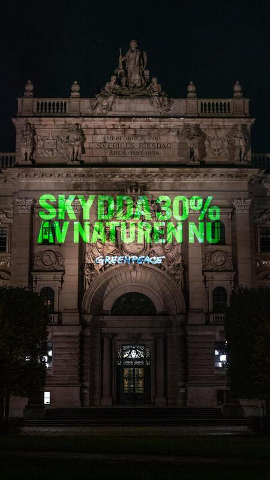
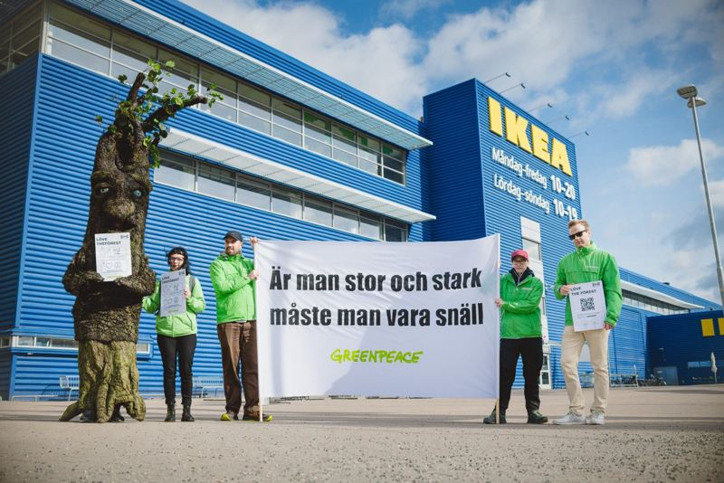
Ikea’s responsibility to act
Against the backdrop of weak political leadership and a sustained weakening of forest protection in Sweden, companies like Ikea must take decisive action.
As one of the world’s largest home furnishing retailer and wood consumer127 Ikea acknowledges its significant influence over the wider forestry industry.128 Its global reach, purchasing power and access to policymakers can shape how forests are managed and protected.
Ikea should therefore use its market power to require suppliers to stop sourcing timber from areas in need of a moratoria, such as continuity forests in Sweden, while using its political influence to advocate for stronger and more ambitious forest protection policies.
The expectation that companies take a comprehensive responsibility for the biodiversity impacts of their own supply chains is increasingly reflected in international biodiversity frameworks. Target 15 of the Kunming–Montreal Global Biodiversity Framework calls on governments to ensure that large and transnational companies regularly monitor, assess and transparently disclose their biodiversity risks, dependencies and impacts across their operations, supply and value chains.129 Although the target is addressed to governments, it establishes a clear international expectation for corporate biodiversity accountability.
The ambition gap
Ikea consistently portrays itself as a global leader in sustainability, climate action, and responsible forest management. The company has made public commitments to improve biodiversity and support the rights of forest-dependent people.130
“As one of the leading wood users in the retail sector, we believe in using our size and global reach to influence, or even transform, the forestry industry”131
“Beyond our own operations and value chain, we are also committed to using our size, scale and reach to contribute to halting deforestation and make responsible forest management and wood sourcing the norm across the world.”132
The company explicitly recognised that its operations and supply chains affect and depend on biodiversity133, and states that it has an “opportunity and responsibility” to reduce its negative impacts and contribute to the protection and improvement of biodiversity.134
These commitments are reflected in specific objectives for 2030. By then, Ikea aims for having its four primary deforestation-linked commodities, including wood, to be “free from links to deforestation, forest degradation and the conversion of natural ecosystems”135 and to “reduce negative pressures and impacts on nature across its value chain, while contributing to the protection, improvement and enhancement of natural ecosystems within its sphere of influence.”136
Taken together, this ambition creates a clear expectation that Ikea should not only reduce its environmental impacts, but also actively contribute to protecting and improving forest ecosystems.
In a report released in October 2026, Greenpeace Nordic identified significant gaps between these ambitions and Ikea’s current approach to biodiversity:137
FSC certification creates a false sense of security, and Ikea needs safeguards that go beyond FSC certification.
These gaps show that Ikea’s existing commitments and safeguards don't work in practice to prevent forest degradation and to protect biodiversity in its supply chain. To close the gaps Ikea needs measurable targets, stronger safeguards, better biodiversity mapping and monitoring, and policy engagement consistent with Ikea’s stated ambitions.
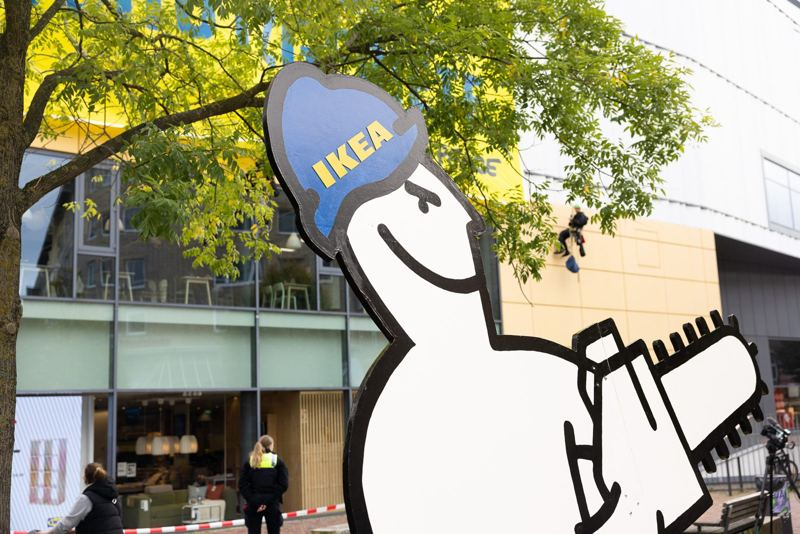
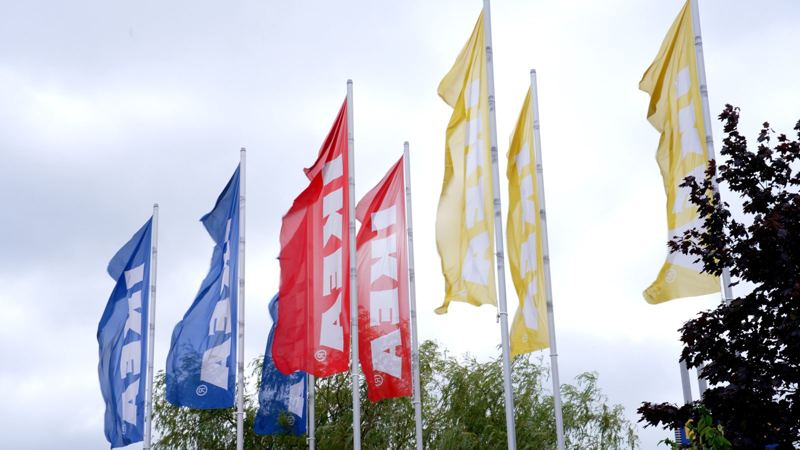
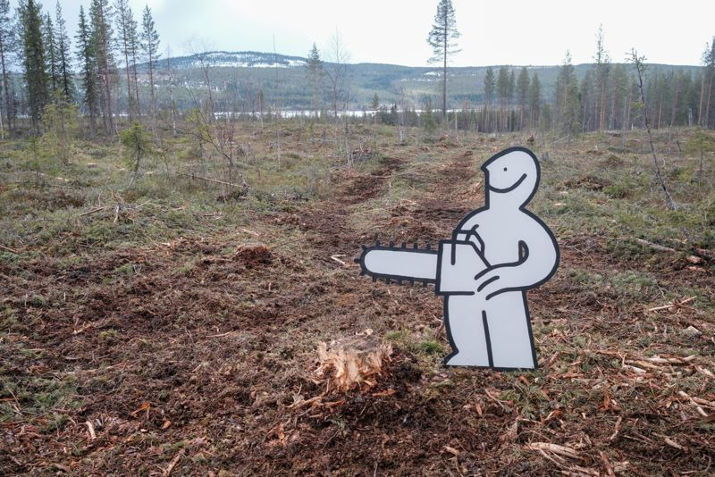
Ikea’s supply chain realities
An irreplaceable forest becomes a shelf
One million shelves per year, that's how many HEJNE-shelfs Swedish forestry giant SCA had first been contracted in 2009 to deliver to the world's biggest furniture retailer, Ikea.138 One million shelves takes a lot of Swedish pine to produce. In the spring of 2026, pine tree logs from two tagged piles trucked into the offloading yard at Bollstabruk sawmill and sent a distinct “ping” with their location to a mobile phone miles away.
The logs came from forests harvested by SCA, all mapped as continuity forests.139
Many of these trees had been standing for a 100 or more years as “Pinus sylvestris”, commonly known as Scots pine. Called ‘tall’ in Swedish, it can attain over 40m in height and live for 400 years or more: one tree in Sápmi is reported to be over 750 years old.140
In continuity forests, these trees are surrounded by other trees, young and old, dead wood and fungi in the soil. They provide cavities for nesting, and offer a wide range of conditions that let specialised species thrive. Also the abundance of arboreal lichen - critical winter feed for reindeer - is dependent on long forest continuity and older trees and decreases significantly as old forests are clear-cut.141 Mycorrhizal fungi form partnerships with trees, and cutting down host trees can severely disrupt these fungal communities and threaten species associated with older forests.142
The difference between continuity forest and industrial tree-plantations are just that: an intricate web of ecological relationships built over centuries versus a crop of trees. Nearly 40,000 football pitches of these forests are being lost every year143, and Ikea is paying to have them felled and turned into one of their cheapest products, a basement shelf.
In one of the forest areas where tracking took place, and whose clear-cut pine logs were traced to SCA’s Bollstabruk sawmill, thousands of orchids called ‘creeping lady’s-tresses’ (Goodyera repens) were documented.144 This perennial orchid is associated with moss-rich coniferous forests, particularly older woodland with long ecological continuity.145 The species is classified as Vulnerable (VU) on Sweden’s national Red List (2025) and is legally protected throughout Sweden under the Swedish Species Protection Ordinance.146
Additionally, tracks of the protected and red-listed three-toed woodpecker (Picoides tridactylus) were identified. The wood-decaying fungus wrinkled crust (Hermanssonia centrifuga) was also found in the surrounding area, which is associated with old spruce forests. It is classified as Near Threatened (NT) in Sweden’s national Red List147 and grows primarily on fallen, decaying spruce logs. It is considered an indicator species of forests with high conservation value.148
According to Artportalen (the Swedish Species Observation System)149, records of the following red-listed species have also been reported in the logged forest area: coal-loving fungus (Carbonicola anthracophila), lungwort lichen (Lobaria pulmonaria), reddish-brown bitterling (Hydnellum ferrugineum), and witch’s hair lichen (Alectoria sarmentosa), the latter being listed as Vulnerable (VU).
In sum, this is the kind of forest that should not have been logged.
However, harvested by semi-automated harvesters and forwarders leaving deep tracks in the moss-covered ground, the remnants of this and other forests were trucked to SCA’s mill in Bollstabruk. After being cut into lumber they were shipped a few kilometers south to the small city of Kramfors.150 SCA has sub-contracted the manufacture of HEJNE to its long-term partner TräTeam as part of its production agreement with Ikea.151 TräTeam is a small family-owned business with 32 employees152 and an annual turnover of SEK66 million153 ( €6.1 million154) staffing two production lines that plane around 80 000 cubic meters of timber per year.155 Over half of this volume goes into the production of the one million HEJNE shelves.156
Once finished into HEJNE shelves, the pine trees leave TräTeams factory as the classic Ikea ‘flatpacks’. The factory is beautifully situated next to the chapel in Kramfors on a narrow peninsular sticking out into the Ångermanland river where manual log drifters used to drift-transport timber. Now the pine trees leave Kramfors in a steady stream on trucks. On each of the million shelves in flatpacks there is an innocuous number: “21324”.
The shelves are trucked to Ikea stores all over Northern Europe.157 There the former continuity forest is picked up by Ikea’s unwitting customers as a low-cost alternative for basement-storage.
Ikea is not talking. And it never openly discloses who actually produced the products they sell. But Greenpeace Nordics's investigators cracked their internal coding system: SCA Wood AB’s exports of Hejne shelves to the US go with a specific number - “21324”.158 The same number (red square on Image XX) is stamped onto ‘Made in Sweden’ Hejne flatpacks found in Ikea store’s pick up areas across many European countries.159
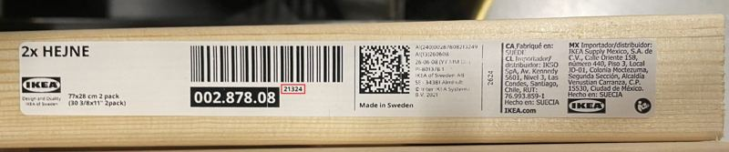
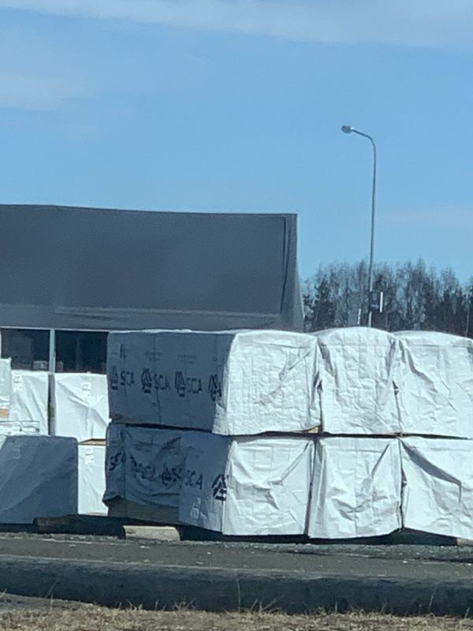
SCA AB is amongst Sweden’s largest forest companies160 and states to be Europe’s largest private forest owner with 2,7 million hectares of forests.161The company had a 2025 turnover of SEK20.43 billion162 (\~€1.9 billio163n) and is controlled by the Fredrik Lundberg family through investment company Industrivärlden164.
SCA is a key actor in Ikea’s furniture supply chain with their sawmills in Munksund and Bollstabruk documented to provide timber for Ikea’s products. Both sawmills have a long history in processing wood for use in Ikea furniture. Not only is it involved in the production of HEJNE, it also supplies Hedlunda, Ikea’s producer of ”IVAR”- shelves with raw material. IVAR is one of Ikea's most well known products and has been produced since 1967. In165 1662007, SCA stated that it was one of Hedlunda’s “important collaboration partners”, providing close to 40 percent of the pine timber used by Hedlunda to produce IVAR shelves.167
According to SCA, Hedlunda supplied Ikea stores in “Sweden, the US, Europe and the rest of the world” with IVAR shelves.168 US customs data for 2026 confirm Hedlunda’s role in Ikea’s global supply chain, listing shipments of ”IVAR”, but also for other pine furniture including MYDAL bunk beds, NEIDEN bed frames and UTÅKER beds.169
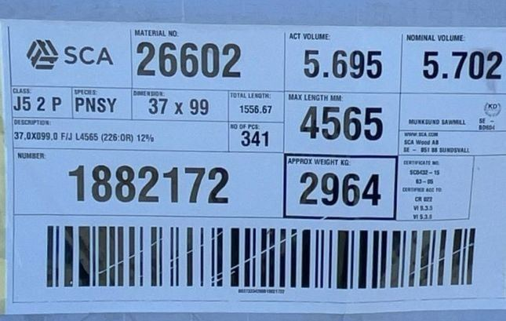
What was seen as a long-term “collaborative relationship with SCA“ nearly 20 years back, is still at work in 2026170 : Greenpeace Sweden’s field investigators documented several bundles of timber from SCA’s Munksund mill at Hedlunda’s facility in Lycksele in April 2026.
Ikea sees Hedlunda “in the ideal position to produce IVAR because of the high quality of FSC-certified pine located in northern Sweden”.171
Greenpeace staff and volunteers could document IVAR side elements ‘Made in Sweden’ also outside the country in Ikea’s stores in Germany and Poland.172
It should be an integral part of Ikea’s customer promise to be able to state that no IVAR shelf is made from continuity forests in need of protection.
But it's not.
Greenpeace Nordic investigators had to spend almost a year, with weeks on the ground tracking timber flows from forests to sawmills, to provide this knowledge.
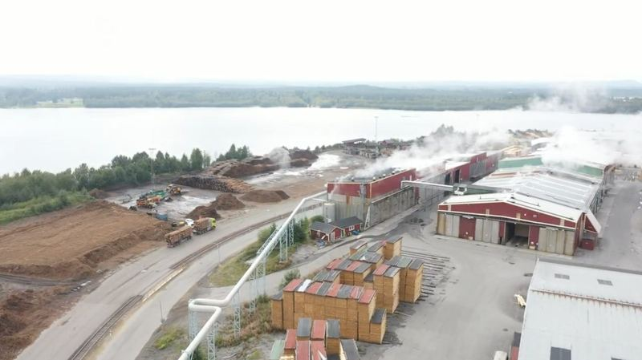
Before the field trips, satellite images were analysed, finally resulting in a list of 20 sites of continuity forest that had recently been clear-cut within what SCA defines as their ‘forest holdings’.173 All these areas held a substantial share of pine trees174 - the species used for HEJNE and IVAR shelves.
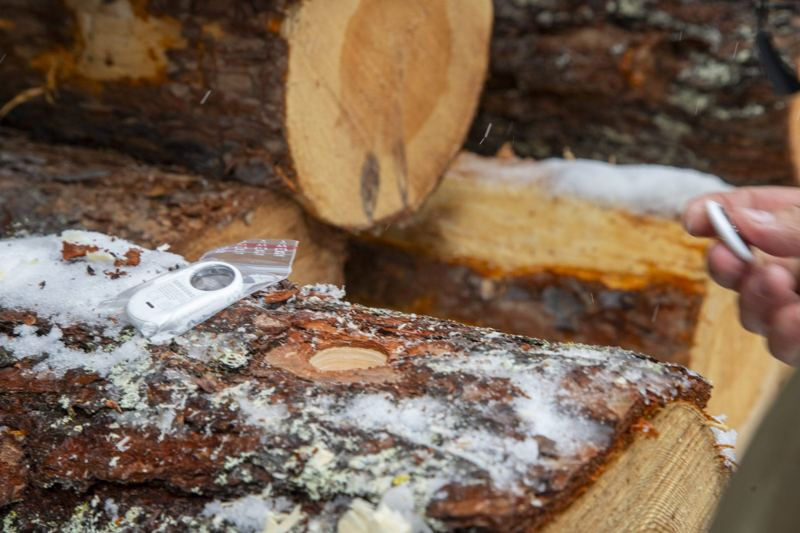
In April and May 2026, the team visited areas affected by logging in Västernorrland and Norrbotten, where the felled trees had been piled up along the roadside. Small holes were drilled in at least two logs, a small numbered smart tag was inserted in each hole and it was then carefully closed and the position recorded.
The hidden tags transmitted their position through mobile phone networks whenever they came close to a phone with an active bluetooth connection. Positions were monitored by Greenpeace Nordic Investigators until the logs arrived at the saw mills.
Timber originating from six clear cut continuity forests was thus documented to arrive at SCA’s saw mill in Munksund175 and from two such forests at SCA’s sawmill in Bollstabruk176 (for details of these sites see Appendix 1).
These eight destroyed continuity forests are just examples of the regular and widespread loss of forests critical for safeguarding Sweden’s forest dependent species diversity.
The regions of where these forests were located span over a number of different Sámi communities. In one of them, Ohredahke Sámi community, SCA was exposed in 2025 for logging thousands of hectares without consent or even a formal consultation process, resulting in the community withdrawing its consent to logging in key- and core grazing areas for reindeer herding.177 This was however not respected by the forestry giant, who kept logging without the required consent.178
Ikea states it believes “ in using our size and global reach to influence, or even transform, the forestry industry”
But in reality Ikea’s furniture supply chain is directly linked to the destruction of Sweden’s natural treasures. Ikea could make a major contribution to ending this destruction, by demanding from their suppliers that the timber entering their supply chain must be free from continuity forests. This must be done, not least in order to regain trust among their customers.
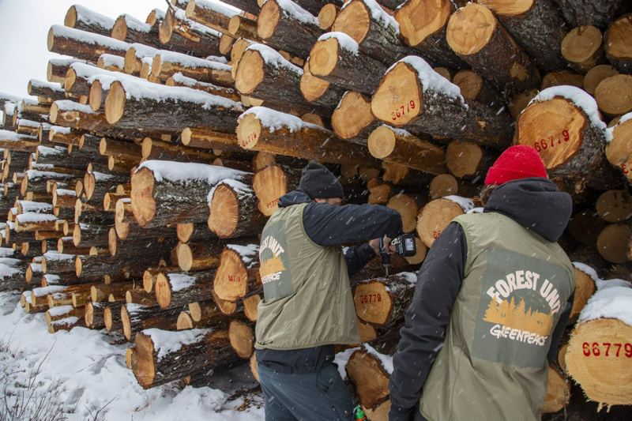
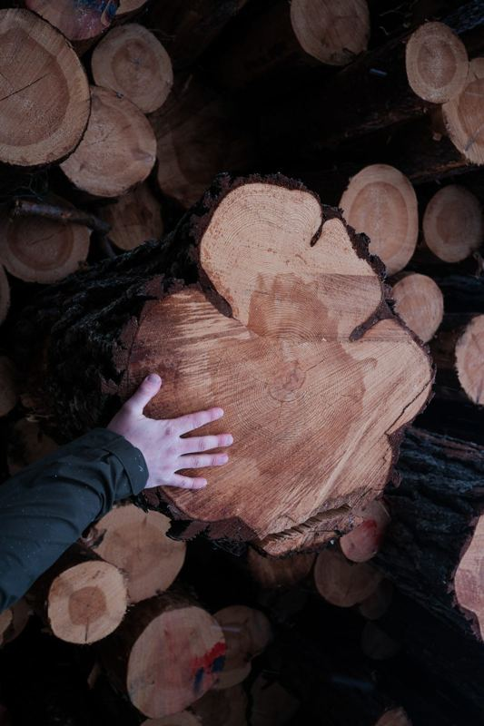
From clear-cut continuity forest to flatpack
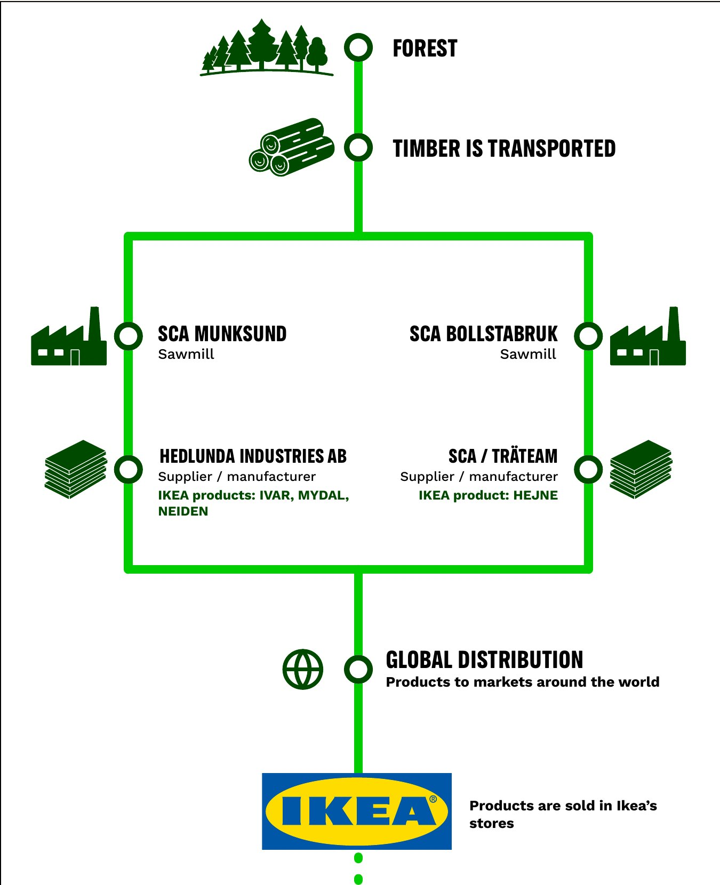
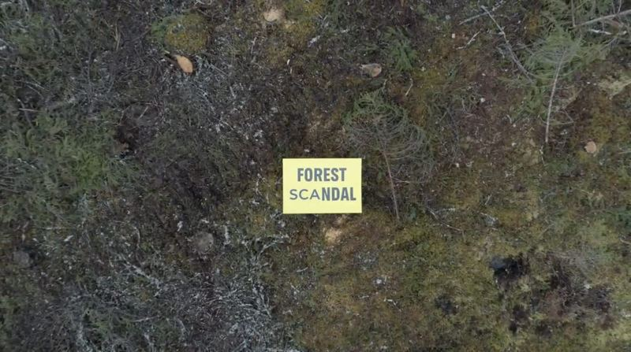
Ikea and the forest SCAndal
The FSC certification shield
The furniture giant Ikea, and many other buyers, refers to its sourcing of wood products as Forest Stewardship Council (FSC) certified and thus sustainably sourced.179
SCA’s entire forest operation in Sweden is FSC certified.180 Meanwhile, analysis has indicated that over a third (37%) of the forest giants' logging notifications are of probable continuity forests181, the same kind of forests Swedish authorities state should be secured from logging.182
It is evident that the FSC framework, not least in Sweden,183 184systematically fails to protect critical ecosystems. In practice it functions as a mechanism for corporate greenwashing.185
The system is set up so that the certifying bodies are hired by and hence financially dependent on the logging companies they are paid to certify.186 187
FSC’s three-chamber governance system, which aims to balance environmental, social and economic interests, ultimately determines the content of the FSC standard in Sweden.188 189Due to the influence of forestry interest, this system produces watered-down compromises190, hindering the assurance that sustainability criteria are grounded in the best available scientific evidence and the ecological requirements of forest ecosystems.191
SCA announced plans to pause its FSC certification in 2025, arguing that the current framework not least regarding indigenous rights and biodiversity "threatened the short-term and long-term availability of raw materials".192
Furthermore, breaches of FSC requirements are often identified by external environmental groups rather than through routine certification audits.193 Once breaches are detected, if they ever are, there are rarely any substantial financial or operational consequences for the logging company.194 This helps explain why the same so-called “mistakes” keep recurring. There is little to lose, as the system is essentially toothless.
This systemic failure is well documented.
Skydda Skogen’s extensive report ‘SCA-Files’, documented over 500 cases of forests with high conservation values being clear cut by FSC-certified forestry giant SCA.195
Greenpeace Nordic and Renskog’s report ‘The battle of the reindeer forests’196 demonstrated how major operators like SCA and Holmen routinely breached FSC guidelines regarding Indigenous rights in Sápmi, when failing to adhere to the indigenous rights principle Free, Prior and Informed Consent or halt the destruction of lichen-rich old-growth forests essential for reindeer in their winter grazing lands.
These structural breakdowns of the certification scheme could mislead international buyers and consumers when purchasing furniture, cardboard, packaging, and paper products. They expose supply chains that may result in severe biodiversity loss and human rights violations.
Freedom without responsibility
Just like Ikea points to the FSC certification to reassure sustainability, they’re also stating that the logging supplying their production is legal.197 But in a system whose legal supervision and governance is fundamentally broken, what is this claim worth?
For decades, the governing principle of Swedish forest policy has been deregulation, leaving much of the decision-making on how forests are managed to the industry.
In the wording of the Swedish Forest Agency: “Swedish forest policy is often summarised in the motto “freedom with responsibility”. Freedom in the sense that the forest conservation legislation contains relatively few governing and binding rules.”198
This system places considerable responsibility on forest companies themselves, while the responsible authority, the Swedish Forest Agency, has limited capacity to review and intervene in individual logging operations.199
Every year, around 60 000 logging notifications are handed in to the Swedish Forest Agency, the majority being automatically approved. Only 2% or less result in an active decision requiring consideration of environmental values.200
Forest companies like SCA are legally obliged to identify environmental values and report them to authorities.201 But they systematically exploit the weaknesses of the system.202
A forest company has little to lose, as in practice, there are basically no consequences to breach environmental legislation by not sufficiently identifying and reporting species findings.203 204Worst case scenario if being caught or ending up in court, they can just withdraw their logging application.205
Reporting the species on the other hand, may result in logging restrictions, impacting their ability to fulfill quotas of logged biomass to feed the industry.
Much of the supervision and detection of environmental risks has effectively shifted from those responsible, forest companies and the authorities, to volunteers and civil society organisations working with limited resources.206
The spirit of civil engagement to identify and protect our last remaining natural forests has a name – ‘Skogsvärn’ – meaning both forest defence and forest protection.
On the frontline of forest protection
While Greenpeace Sweden investigators traced logs from clear-cut continuity forests to the production of Ikea's products, other groups have been working on the ground in the same region to stop the next valuable forests from disappearing.
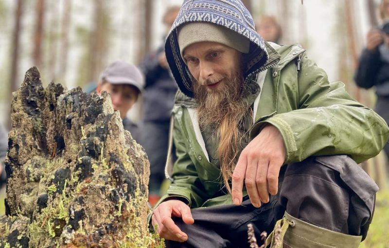
In the regions of Jämtland and Västernorrland, volunteers from forest groups such as Skogsvärn Skogsnäs/Näsåker have spent years dedicating their time walking through forests marked for logging, searching for signs of life that would otherwise go unnoticed. They document old trees, dead wood, fungi, lichens and birds, building the evidence needed to challenge SCA’s plans in court.207
Only In 2025, the planned logging by SCA of at least 100 continuity forests with high conservation values, was halted in court due to the tireless work of this and other volunteering groups.208 A concrete proof of the lack of supervision from authorities and failure of Sweden's 'freedom under responsibility’ governance as well as the FSC certification system.
Irreplaceable forests are still standing, but the threat of logging by SCA remains acute. Two ongoing cases that the Skogsvärn Skogsnäs/Näsåker group is currently fighting for concern ‘Vasatallskogen’ and ‘Måns-Lars mountain’. These are just two out of many cases like this, forests with high conservation values in the same region that risk being clear-cut and ending up in Ikea's supply chain.
If their fate is to risk becoming raw material for Ikea furniture, or continue to sustain life in Sweden’s forests, is yet undecided.
Vasatallskogen: A forest shaped by fire and time209
At Vasatallskogen, near Källmyrtjärnen in Strömsund municipality, old Scots pines grow across sandy ridges marked by the traces of past forest fires. Charred standing trunks and old dead pinewood remain scattered through the forest, remnants of natural processes that have shaped this landscape over centuries.
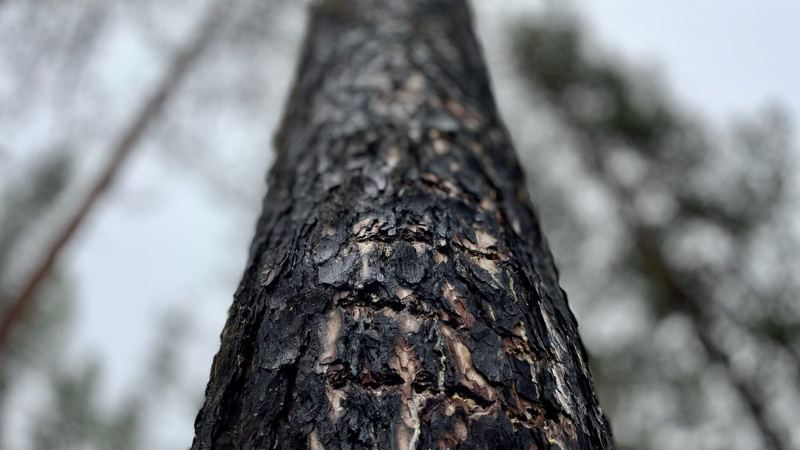
This is a forest that appears to qualify as the Western Taiga habitat type, a category recognised under the EU Habitats Directive. Such forests are increasingly scarce, and their ecological value lies not simply in the trees themselves, but in the structures that develop over long periods without intensive forestry.
The forest is home to several red-listed and protected species. The creeping lady’s-tresses orchid (Goodyera repens), classified as Vulnerable in Sweden, depends on the stable, humid conditions of mature forest.
The coal-loving lichen (Carbonicola anthracophila) is associated with fire-scarred pinewood, while the red-listed lichens and fungi found here reflect the continuity of old trees and dead wood. These specialised habitats cannot simply be recreated by planting a new generation of trees after clear-cutting.
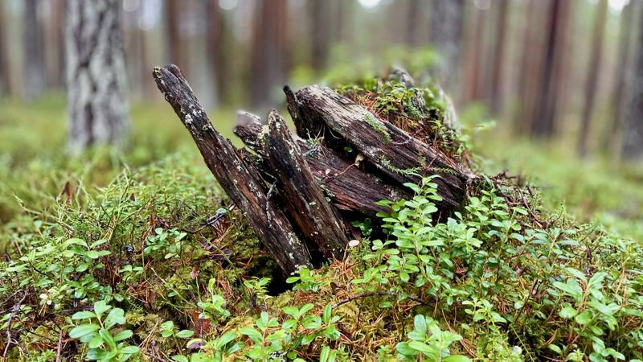
The forest also provides habitat for the Eurasian three-toed woodpecker (Picoides tridactylus) and the willow tit (Poecile montanus), both protected under Swedish law. During their nature survey, the volunteering forest group documented fresh feeding marks made by three-toed woodpeckers on trees within the area proposed for logging. Such marks can indicate that the birds use the forest as part of their territory. The species depends on a continuing supply of dying and dead trees, a resource that naturally develops in mature forests but can be lost when they are logged or thinned.
In June 2025, SCA submitted logging notifications for two areas in this forest covering 7.5 and 1.3 hectares. Following an appeal by the forest protectors in collaboration with the Swedish Society for Nature Conservation in Jämtland-Härjedalen, the court halted the planned logging210 and later referred the case back to the Swedish Forest Agency for further assessment.211
The forest still stands, but there are no official signs that it has been excluded from SCA’s logging plans. The risk of ending up as a cheap Ikea shelf or bedframe is therefore still evaluated as prominent.
Måns-Lars mountain: Threatened species in the path of logging212
At Måns-Lars mountain in Strömsund municipality, older spruces and pines grow alongside standing dead trees and decaying wood. The forest’s layered structure provides a range of habitats, from the trunks and branches above to the shaded ground below. The dead trees remain essential to this living landscape.
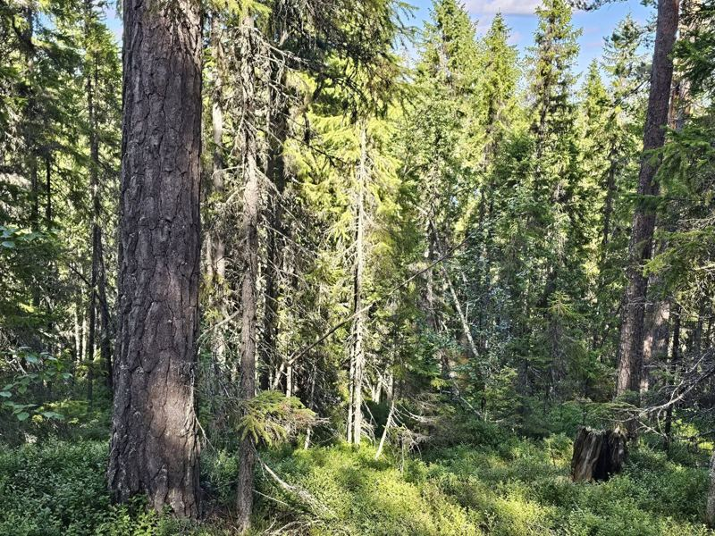
The forest supports a rich variety of conservation-sensitive species. Witch’s hair lichen (Alectoria sarmentosa) hangs from trees in humid forest environments, while lungwort lichen (Lobaria pulmonaria) and pelt lichens such as Lobaria scrobiculata are associated with old trees and long forest continuity. The red-listed pine wood fungus (Porodaedalea pini) is linked to older pines, while the woolly velvet polypore (Phellinidium ferrugineofuscum) depends on decaying conifer wood. Together, these species reveal a forest whose ecological value has developed over time.
Birdlife adds another dimension. Also this forest had evidence of the Eurasian three-toed woodpecker (Picoides tridactylus) having left characteristic feeding marks on tree trunks, as it searches for insects beneath the bark. Several individuals of the willow tit (Poecile montanus) were also recorded in the area, where layered forest and decaying trees provide important habitat.
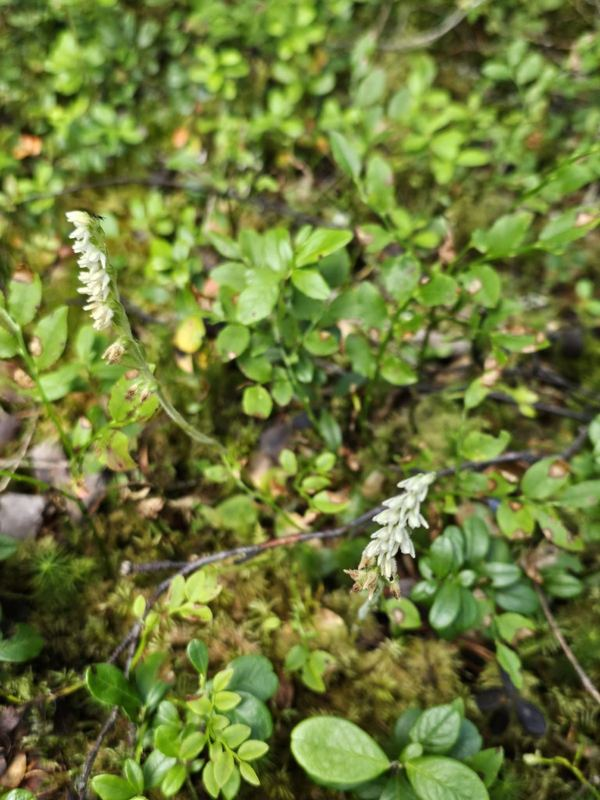
Five locations of the lady’s-tresses orchid (Goodyera repens) were documented within the proposed logging area. This small forest-floor orchid depends on stable moisture and shade, conditions that can be disrupted when surrounding trees are felled.
In August 2026, SCA submitted a logging notification covering 10.6 hectares. A nature survey recorded nine red-listed species, including three protected species. The forest protectors in collaboration with the Swedish Society for Nature Conservation in Jämtland-Härjedalen, challenged the Swedish Forest Agency’s handling of the case, warning that logging before adequate assessment could irreversibly damage the species’ habitats.
The court has put a temporary ban on logging this forest.213
These two cases, together with Greenpeace Nordic field investigation, illustrate clear examples of what is at stake.
The survival of Sweden’s national treasures should not depend on efforts from volunteers dedicating their time to do the jobs of the authorities and forest companies. Ikea, forestry companies and the Swedish government must ensure that continuity forests are protected before they are reduced to raw material.
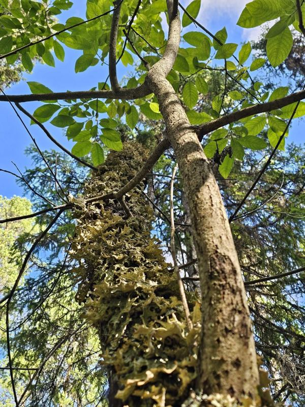
Vanishing Forests (Part 2)
Conclusions
Conclusions
What Ikea must do
This report documents how timber from Sweden’s remaining continuity forests can enter Ikea's supply chain, despite the company’s public commitments to protect biodiversity and promote responsible forestry. At a time when these irreplaceable ecosystems continue to disappear, existing certification schemes and sourcing safeguards are not enough.
A cheap shelf should never come at the cost of an irreplaceable forest. Ikea now faces a choice: continue to rely on a system that allows the destruction of these forests to reach its products, or use its influence to help stop it. The time to act is now, while there are still forests left to protect.
Greenpeace Nordic call on Ikea to take the following actions:
As one of the world’s largest wood consumers, IKEA has the market power to influence forestry practices and the political influence to support stronger protection. It must use both.
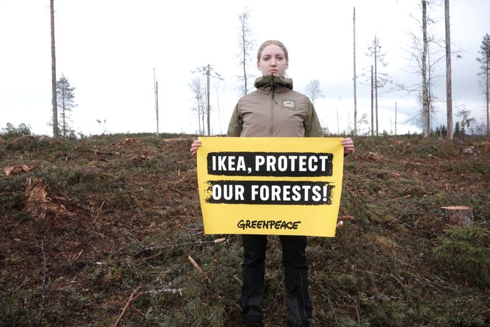
Conclusions
What the Swedish
Government must do
The findings of this report raise serious concerns about the direction of Swedish forest policy. Previous political decisions and priorities have favoured timber production, while efforts to protect biodiversity have remained insufficient.
Together with limited resources for environmental supervision and gaps in formal forest protection, this has left Sweden’s remaining continuity forests increasingly vulnerable to logging. Preventing further losses requires a shift in government policy and concrete measures to ensure effective, long-term protection for forests with irreplaceable ecological values.
Greenpeace Nordic call on the Swedish Government to take the following actions:
Together, these measures would help prevent the loss of irreplaceable forests, improve the practical conditions for long-term protection and strengthen the public oversight on which effective forest conservation depends.
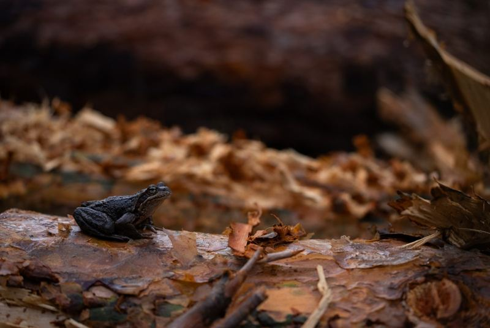
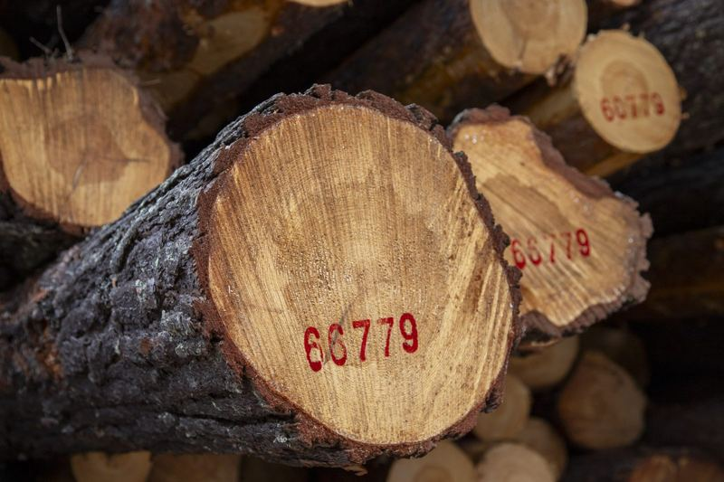
Appendix I: Clearcut continuity forests with logs ending up at sawmills linked to Ikea’s supply chain
Methodology
The areas visited by Greenpeace Sweden’s field investigators, had been pre-selected with a focus on areas likely to feed into Ikea’s supply chain via SCA. So-called ‘logging notification areas’ had therefore been chosen that were placed within SCA’s holdings and identified by Sweden’s Environmental Protection Agency (Naturvårdsverket) as pine forests216 and probable or potential continuity forests (CF).217 Naturvårdsverket had first commissioned mapping of continuity forest in 2015 and the original map published in 2017 was gradually improved by subsequent more precise analysis. The Agency described the difference as ”Probable continuity forests have no traces of late forestry and
all areas have been checked in aerial photographs. Potential continuity forests have been evaluated statistically but the areas have not been controlled.”218 That means, all potential continuity forests remaining on the last iteration of the map as of 2024, used for this report, might well be classified as probable once the mapping will be final. The status of the eight logging sites presented in this report had in addition been reviewed by Jon Andersson (Skydda Skogen) who confirmed the status of the eight areas as probable continuity forests by consulting historical orthographic imagery.
The areas linked to the logging notifications listed below had all been visited in April to May 2026. At each location logging had been concluded and logs were found piled up next to the clear cuts. Smart tags had been inserted to two logs of each pile by drilling a small hole into them, placing the tag, then covering the hole again. Smart tags transmit their position via mobile phone networks using any phone in their vicinity that has an active bluetooth connection. Screenshots were taken from where the tags were deployed and from where they ended up.
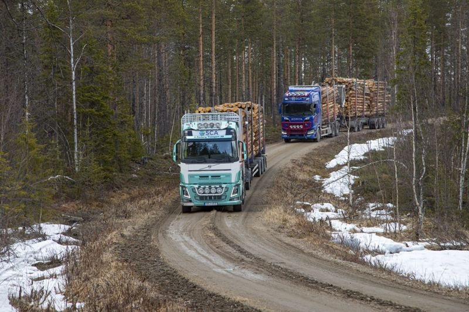
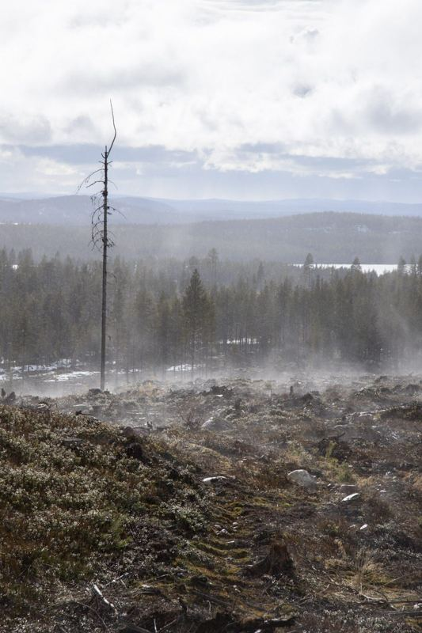
A 27065-2025Logging notification
| Logging notification | A 27065-2025 |
|---|---|
| Region | Västernorrland |
| Community | Ohredake |
| Continuity Forest class | potential |
| Logging notification sent by | Intistle flu AB |
| Logger | SCA |
| Hectar | 1 |
| Field visit | April 2026 |
| Receiver of logs | SCA Bollstabruk (sawmill) |
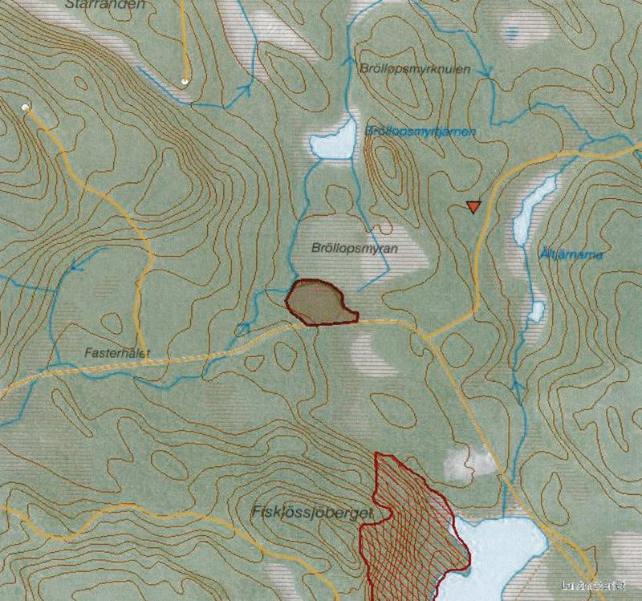
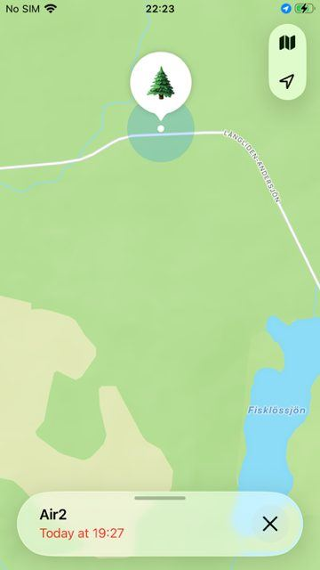
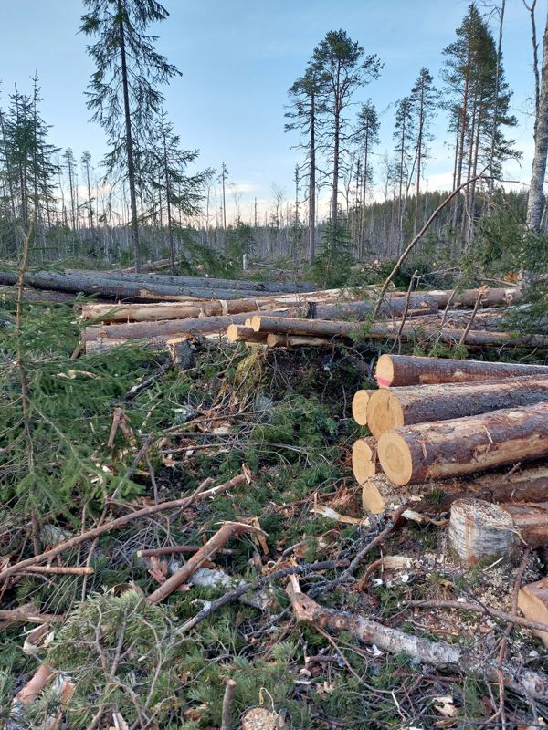
A 9158-2026Logging notification
| Logging notification | A 9158-2026 |
|---|---|
| Region | Västernorrland |
| Community | Ohredake |
| Continuity Forest class | probable/potential |
| Logging notification sent by | SCA |
| Owner | SCA |
| Planned logging area | 16.2 |
| Field visit | Apr/May 2026 |
| Receiver of logs | SCA Bollstabruk (sawmill) |
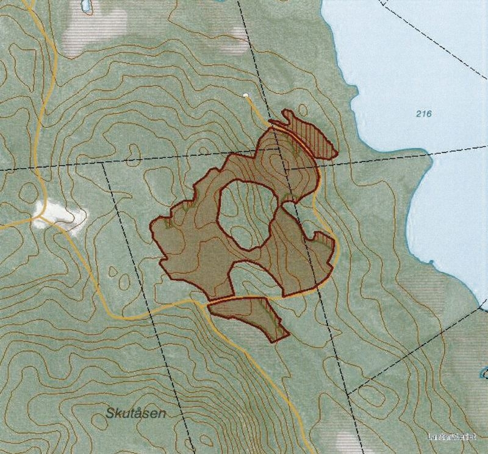
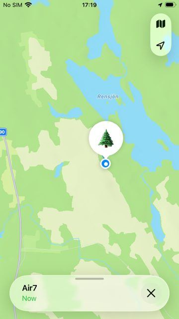
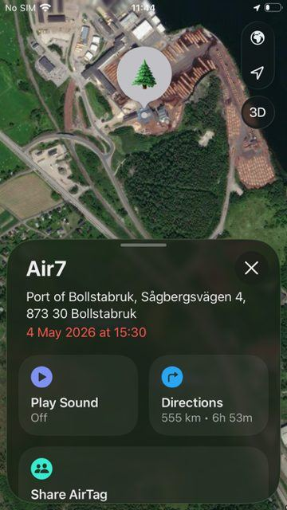
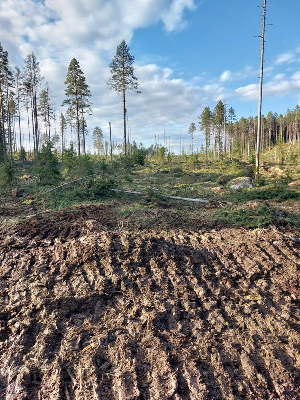
A 37683-2025Logging notification
| Logging notification | A 37683-2025 |
|---|---|
| Region | Norrbottens Län |
| Community | Gällivare |
| Continuity Forest class | probable (partially) |
| Logging notification sent by | SCA |
| Owner | SCA |
| Planned logging area | 3.9 |
| Field visit | May 2026 |
| Receiver of logs | SCA Munksund (sawmill) |
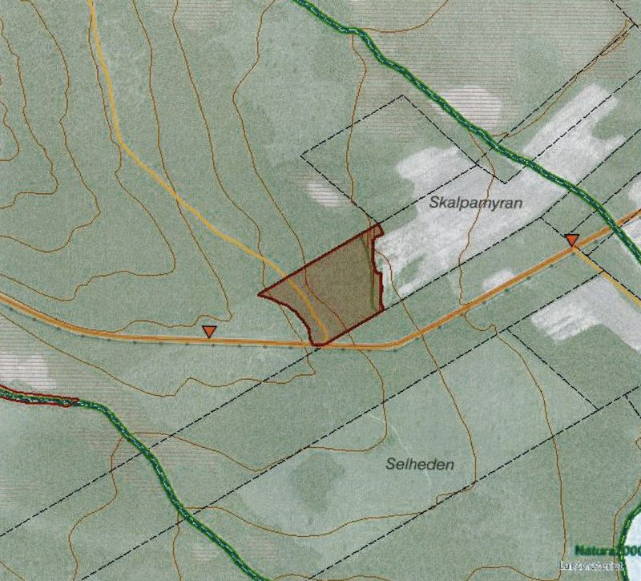
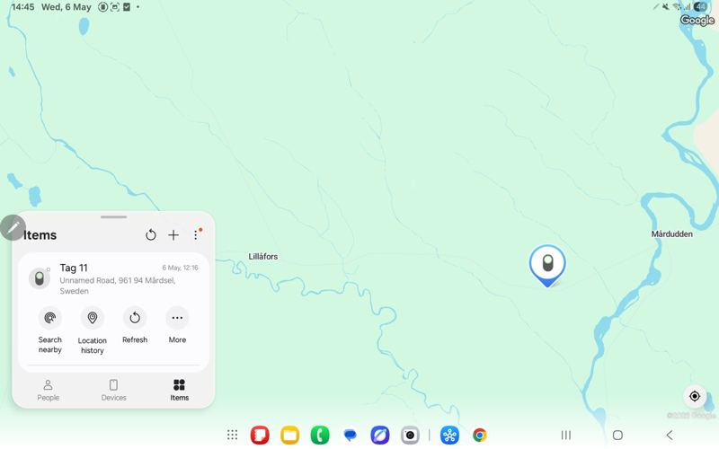
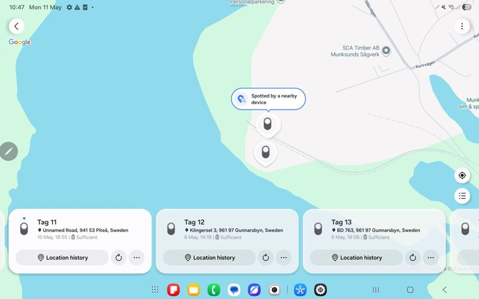
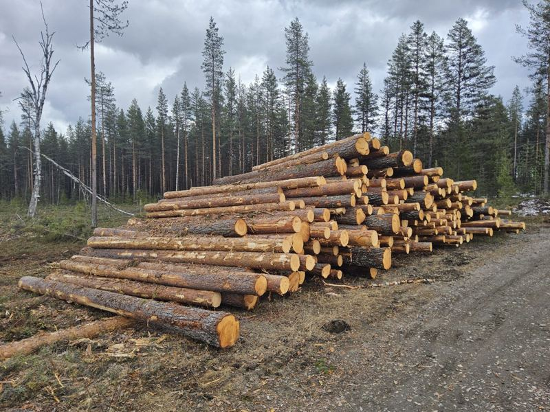
A 52680-2025Logging notification
| Logging notification | A 52680-2025 |
|---|---|
| Region | Norrbottens Län |
| Community | Gällivare / Kalix |
| Continuity Forest class | potential (partially) |
| Logging notification sent by | SCA |
| Owner | Intistle flu AB |
| Planned logging area | 1 |
| Field visit | May 2026 |
| Receiver of logs | SCA Munksund (sawmill) |
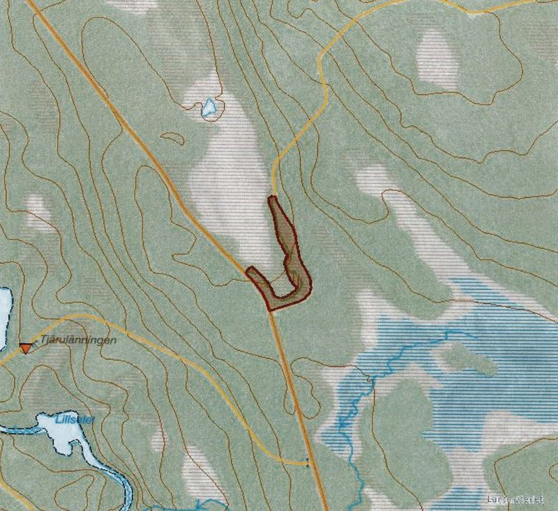
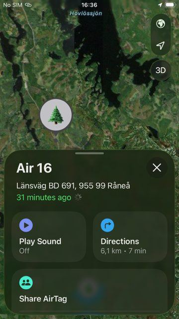
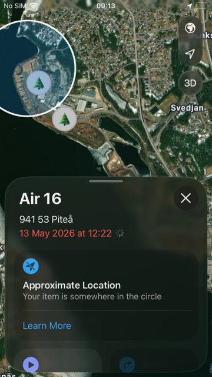
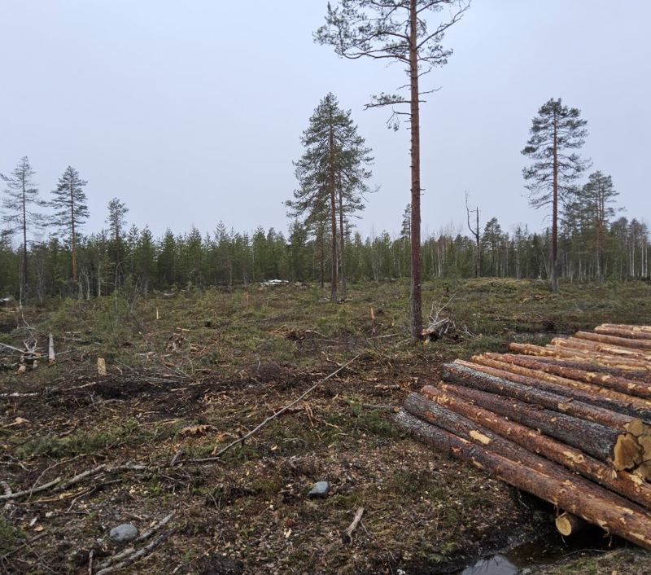
A 45957-2025Logging notification
| Logging notification | A 45957-2025 |
|---|---|
| Region | Norrbottens Län |
| Community | Östra Kikkejaure |
| Continuity Forest class | probable |
| Logging notification sent by | Intistle flu AB |
| Owner | SCA |
| Planned logging area | 9.6 |
| Field visit | May/Jun 2026 |
| Receiver of logs | SCA Munksund (sawmill) |
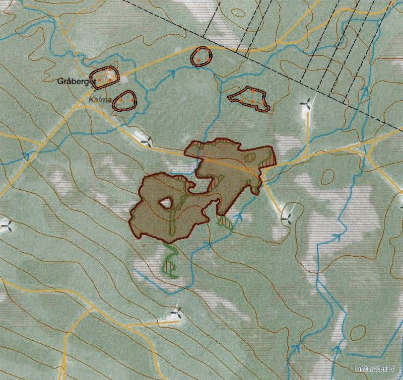
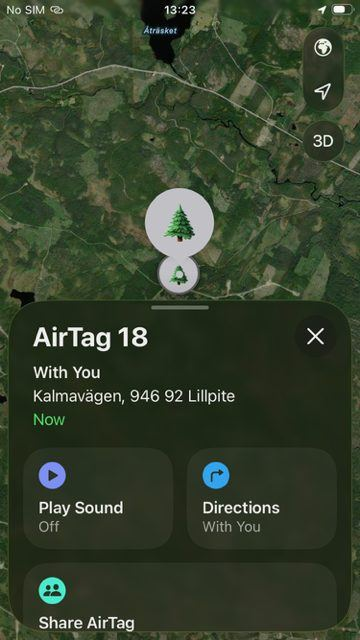
A 22098-2022Logging notification
| Logging notification | A 22098-2022 |
|---|---|
| Region | Norrbottens Län |
| Community | Tuorpon |
| Continuity Forest class | probable/potential |
| Logging notification sent by | SCA |
| Owner | SCA |
| Planned logging area | 11.1 |
| Field visit | May 2026 |
| Receiver of logs | SCA Munksund (sawmill) |
A 7152-2026Logging notification
| Logging notification | A 7152-2026 |
|---|---|
| Region | Norrbottens Län |
| Community | Gällivare |
| Continuity Forest class | potential |
| Logging notification sent by | SCA |
| Owner | SCA |
| Planned logging area | 0.6 |
| Field visit | May 2026 |
| Receiver of logs | SCA Munksund (sawmill) |

A 47948-2025Logging notification
| Logging notification | A 47948-2025 |
|---|---|
| Region | Norrbottens Län |
| Community | Luokta-Mávas |
| Continuity Forest class | probable (partially) |
| Logging notification sent by | SCA |
| Owner | SCA |
| Planned logging area | 6.5 |
| Field visit | May 2026 |
| Receiver of logs | SCA Munksund (sawmill) |
Vanishing Forests (Part 2)
Appendix II: References
- Ikea (2025) Ikea Sustainability Strategy 2025–2030, Inter Ikea Group ↩
- Skogsstyrelsen (2026) Biologisk mångfald i skogen/Biodiversity in the Forest, Swedish Forest Agency, Report 2026/07, revised version ↩
- Skogsstyrelsen (2026) Biologisk mångfald i skogen/Biodiversity in the Forest, Swedish Forest Agency, Report 2026/07, revised version ↩
- Skogsstyrelsen (2026) Biologisk mångfald i skogen/Biodiversity in the Forest, Swedish Forest Agency, Report 2026/07, revised version ↩
- The maps of these areas are freely available from Swedish government geodata sites. An excellent compilation of these resources can be accessed through an interactive map, set up by the Swedish NGO Skydda Skogen. This service provides maps of Swedish forests with confirmed and probable high conservation values, as well as areas with potential and probable continuity forests. The resource also provides maps of other forests with indications of high conservation values. The companies sourcing material from Sweden should request from their suppliers that they guarantee that the material they provide does not originate in the areas identified in these maps as continuity forests, or as other forests with identified high natural value. ↩
- Skogsstyrelsen (2026) Biologisk mångfald i skogen/Biodiversity in the Forest, Swedish Forest Agency, Report 2026/07, revised version ↩
- United Nations Environment Programme (2025) Emissions Gap Report 2025, UNEP ↩
- Skogsstyrelsen (2026) Biologisk mångfald i skogen/Biodiversity in the Forest, Swedish Forest Agency, Report 2026/07, revised version ↩
- SLU (2025). Forest Statistics 2025/ Skogsdata 2025, Swedish University of Agricultural Sciences (SLU), May 2025 ↩
- Swedish Forest Agency & Swedish Environmental Protection Agency (2023) Förutsättningar för hyggesfritt skogsbruk och definition av naturnära skogsbruk i Sverige / Conditions for continuous-cover forestry and a definition of close-to-nature forestry in Sweden, Report 2023:16 ↩
- Nirhamo, A., Aakala, T., & Kouki, J. (2025) Forest biodiversity in boreal Europe: Species richness and turnover among old-growth forests, managed forests and clearcut sites. Biological Conservation, vol. 306, Jun 2024. ↩
- Swedish Environmental Protection Agency (2022) Underlag till styrmedelsanalyser för att hejda förlusten av biologisk mångfald i den produktiva skogen/Supporting material for policy instrument analyses to halt the loss of biodiversity in productive forests, Sep 22, 2022 ↩
- Skogsstyrelsen (2026) Biologisk mångfald i skogen/Biodiversity in the Forest, Swedish Forest Agency, Report 2026/07, revised version ↩
- Skogsstyrelsen (2026) Biologisk mångfald i skogen/Biodiversity in the Forest, Swedish Forest Agency, Report 2026/07, revised version ↩
- Skogsstyrelsen (2026) Biologisk mångfald i skogen/Biodiversity in the Forest, Swedish Forest Agency, Report 2026/07, revised version ↩
- Svensson, J., Wallin, I., & Droste, N. (2026) Power over the forest / Makten över skogen, Report 2026/03, Swedish Forest Agency, ↩
- See chapter 4 for more details, and also SSNC (2025) Politics in conflict with nature, Swedish Society for Nature Conservation, Aug 27, 2025 ↩
- Skogsstyrelsen (2023) Frihet under ansvar, The Swedish Forest Agency, Dec 21, 2023 ↩
- SCA owns approximately 2.7 million hectares of forest land in Sweden, mainly in the north. This equals nearly 10% of Sweden’s forest area, while SCA’s forest land might also include non-forested areas. The company doesn’t specify that. Source: SCA (2026) Annual Report 2025, SCA AB ↩
- SFI (2023) Finding the right forestry methods requires more research and knowledge, Swedish Forest Industries, Oct 24, 2023 ↩
- SCA (online) Contorta pine on SCA's land, SCA AB, accessed Oct 12, 2026 ↩
- Skogsstyrelsen (2026) Biologisk mångfald i skogen/Biodiversity in the Forest, Swedish Forest Agency, Report 2026/07, revised version ↩
- Mehta, A. (2026) Inside Ikea’s quest for sustainable wood, Reuters, Sep 29, 2026 ↩
- Ikea (2026) Inter Ikea Group Sustainability Statement FY25, Inter IKEA Systems B.V. , p40: Ikea states in the report to have used 14.7 million m³ roundwood equivalent used FY25, 81%, or 11.9 million m³ thereof fresh fibre, 19% recycled fibre. ↩
- Ikea (undated) The wood we use, Inter Ikea Systems B.V., accessed Oct 22, 2026 ↩
- Ikea (2025) Ikea Sustainability Report FY24, Inter IKEA Systems B.V. ↩
- Ikea (2024) Ikea Sustainability Report FY23, Inter IKEA Systems B.V. ↩
- Ikea (2025) Ikea Sustainability Strategy 2025–2030, Inter IKEA Systems B.V. ↩
- SCA (online) Forest Map, accessed Feb/Mar 2026 ↩
- SCA (2026) Annual Report 2025, SCA AB ↩
- Johansson, L. (2025) Kritik mot SCA efter avverkning i Bräcke – skyddade arter anmäldes inte: ”Finns en systematik”/Criticism of SCA after logging in Bräcke – protected species were not reported: "There is a system", SVT Nyheter, Oct 28, 2025 ↩
- Dagens Nyheter (2025) SCA högg ner skog från Carl von Linnés tid – ”skräckexempel”/ SCA cut down forest from Carl von Linné's time - "horror example", Aug 5, 2025 ↩
- WWF (2026) SCA har avverkat nyckelbiotoper i strid med FSCs regelverk/SCA has logged key biotopes in violation of FSC regulations, World Wildlife Found, May 6, 2026 ↩
- Greenpeace & Renskog. (2025). Kampen om renskogarna: En inblick i skogsbolagens brist på respekt för rätten till fritt, på förhand och informerat samtycke/The reindeer forests scandal: An insight into forestry companies' lack of respect for the right to free, prior and informed consent, Greenpeace Nordic ↩
- Ragnehag, P. (2025) SCA i konflikt med sameby – här stoppar Greenpeace skogsmaskinen/SCA in conflict with Sameby – here Greenpeace stops a forest machine, SVT Nyheter, Jan 28, 2025 ↩
- Dagens Nyheter (2025) Nestlé stops buying wood raw material from northern Sweden amid controversies, Nov 7, 2025 ↩
- Dagens Nyheter (2026) Clothing giant Zalando phases out Swedish SCA, citing human rights, Feb 16, 2026 ↩
- Dagens Nyheter (2026) Global cosmetics giant phases out SCA: third company in a short period, Mar 31, 2026 ↩
- Skogsstyrelsen (2026) Biologisk mångfald i skogen/Biodiversity in the Forest, Swedish Forest Agency, Report 2026/07, revised version ↩
- Jonsson et al. (2020) Stand age and climate influence forest ecosystem service delivery and multifunctionality, Environmental Research Letters ↩
- Skogsstyrelsen (2026) Biologisk mångfald i skogen/Biodiversity in the Forest, Swedish Forest Agency, Report 2026/07, revised version ↩
- SLU (2025) Många skogslevande arter hotas av trakthyggesbruk, Sveriges lantbruksuniversitet/Swedish University of Agricultural Sciences, May 13, 2025 ↩
- SLU (2025) Hur mår den svenska skogen egentligen?, Sveriges lantbruksuniversitet/Swedish University of Agricultural Sciences, May 23, 2025 ↩
- In Sweden, productive forests are defined as forests producing at least 1m³ of wood per hectare and year. Source: SLU (2026) Productive forest land, Sveriges lantbruksuniversitet/Swedish University of Agricultural Sciences (SLU) ↩
- Naturvårdsverket (2023) Forest: Formally Protected Forest Land, Naturvårdsverket/Swedish Environmental Protection Agency. Note: the source is unclear whether the actual figure is 5 or 6%. ↩
- Skogsstyrelsen (2026) Levande skogar: Fördjupad utvärdering 2027, Report 2026/11, Jönköping: Swedish Forest Agency ↩
- Skogsstyrelsen (2026) ‘Miljömålen i skogen nås inte – ökade insatser och bättre styrmedel behövs’, Swedish Forest Agency, Mar 1, 2026 ↩
- Skogsstyrelsen (2026) Biologisk mångfald i skogen/Biodiversity in the Forest, Swedish Forest Agency, Report 2026/07, revised version ↩
- Swedish Environmental Protection Agency (2022) Underlag till styrmedelsanalyser för att hejda förlusten av biologisk mångfald i den produktiva skogen/Supporting material for policy instrument analyses to halt the loss of biodiversity in productive forests, Sep 22, 2022 ↩
- Skogsstyrelsen (2026) Biologisk mångfald i skogen/Biodiversity in the Forest, Swedish Forest Agency, Report 2026/07, revised version ↩
- Skogsstyrelsen (2026) Biologisk mångfald i skogen/Biodiversity in the Forest, Swedish Forest Agency, Report 2026/07, revised version ↩
- Skogsstyrelsen (2026) Biologisk mångfald i skogen/Biodiversity in the Forest, Swedish Forest Agency, Report 2026/07, revised version ↩
- SLU (2026) Red-listed species in Sweden 2025, Swedish Species Information Centre, Swedish University of Agricultural Sciences (SLU), accessed Oct 2026 ↩
- SLU (2026) Summary: The Swedish Red List 2025, Swedish Species Information Centre, Swedish University of Agricultural Sciences (SLU) ↩
- Skogsstyrelsen (2026) Biologisk mångfald i skogen/Biodiversity in the Forest, Swedish Forest Agency, Report 2026/07, revised version ↩
- Skogsstyrelsen (2026) Biologisk mångfald i skogen/Biodiversity in the Forest, Swedish Forest Agency, Report 2026/07, revised version ↩
- Skogsstyrelsen (2026) Biologisk mångfald i skogen/Biodiversity in the Forest, Swedish Forest Agency, Report 2026/07, revised version ↩
- CBD (2022) Kunming–Montreal Global Biodiversity Framework, Convention on Biological Diversity - Target 3: Conserve 30% of Land, Waters and Seas ↩
- European Commission (2020) EU Biodiversity Strategy for 2030: Bringing nature back into our lives. COM(2020) 380 final, May 20, 2020 ↩
- Skogsstyrelsen (2026) Biologisk mångfald i skogen/Biodiversity in the Forest, Swedish Forest Agency, Report 2026/07, revised version p16 ↩
- Naturvårdsverket (2025) Forest emissions and removals of greenhouse gases, Swedish Environmental Protection Agency, Dec 16, 2025. ↩
- Björheden, R. (ed.) (2019) Climate Impact of Swedish Forestry: Absorption and emissions of carbon dioxide, Skogforsk, Jul 2019 ↩
- Naturvårdsverket (2026) Research call on continuity forests as carbon sink, Swedish Environmental Protection Agency, Sep 7, 2026 ↩
- Pascual et al. (2026) Higher carbon storage in primary than secondary boreal forests in Sweden, Science, 391(6791), pp. 1256–1261 ↩
- Lindroth, A. (2023) Clarifying the carbon balance recovery time after clear-cutting. Glob Change Biol, 29: 4178- 4179 ↩
- Pascual et al. (2026) Higher carbon storage in primary than secondary boreal forests in Sweden, Science, 391(6791), pp. 1256–1261 ↩
- GPI (2018) The impacts of industrial logging in the Great Northern Forest, Greenpeace International, June 2018 ↩
- 29.3 MtCO₂e in net Land Use, Land Use Change and Forestry (LULUCF) removals by 2030 compared to an estimated target of 50.1 MtCO₂e. Source: EC (2025) Climate Action Progress Report 2025: Sweden, European Commission Directorate-General for Climate Action, Jan 2026 ↩
- Truth Commission for the Sámi People (2026) Markerna berättar och minns: Konsekvenser för samer av svensk politi/The land tells its stories and remembers: Consequences of Swedish policies for the Sámi / (SOU 2026:58, Vol. 2) ↩
- Sámi Parliament of Sweden (2025) The reindeer and the forest /Renen och skogen ↩
- Berg, A., Östlund, L., Moen, J. & Olofsson, J. (2012) Forest fragmentation and landscape change in a reindeer husbandry area in northern Sweden, Forest Ecology and Management, 287, 14–22. ↩
- Dettki, H. & Esseen, P.A. (1998). Epiphytic macrolichens in managed and natural forest landscapes: a comparison at two spatial scales. Ecography 21(6), 613-624 ↩
- Sandström, P., et al (2016) On the decline of ground lichen forests in the Swedish boreal landscape: Implications for reindeer husbandry and sustainable forest management, Ambio, Volume 45, pages 415–429, Jan 11, 2016 ↩
- Brännström, M. (2017) Forestry and reindeer husbandry on the same land: A legal study of land ownership and Sámi reindeer herding rights. Doctoral dissertation, Umeå University. ↩
- United Nations General Assembly (2007) United Nations Declaration on the Rights of Indigenous Peoples (A/RES/61/295), United Nations. ↩
- CBD (2022) Kunming-Montreal Global Biodiversity Framework, United Nations Environment Programme - Convention on Biological Diversity, Dec 19, 2022 ↩
- EC (2020) EU Biodiversity Strategy for 2030: Bringing nature back into our lives, European Commission COM(2020) 380 final; May 5, 2020 ↩
- EC (online) Nature Restoration Regulation, European Commission, accessed Sep 10, 2026 ↩
- CBD (2022) Kunming-Montreal Global Biodiversity Framework, United Nations Environment Programme - Convention on Biological Diversity, Dec 19, 2022. ↩
- EC (2023) Guidelines for defining, mapping, monitoring and strictly protecting EU primary and old-growth forests, European Commission, Mar 21, 2023 ↩
- EC (2020) EU Biodiversity Strategy for 2030: Bringing nature back into our lives, European Commission COM(2020) 380 final; May 5, 2020, p. 4 ↩
- EP & Council of the EU (2024) Regulation (EU) 2024/1991 of the European Parliament and of the Council of 24 June 2024 on nature restoration and amending Regulation (EU) 2022/869, European Parliament and Council of the European Union Official Journal of the European Union, Jun 24, 2024 ↩
- Skogsstyrelsen (2026) Biologisk mångfald i skogen/Biodiversity in the Forest, Swedish Forest Agency, Report 2026/07, revised version ↩
- The Swedish government under the Tidö agreement consisted of the Moderate Party, the Christian Democrats and the Liberals, with parliamentary support from the Sweden Democrats. Gov of Sweden (2022) Statement of Government Policy, 18 October 2022, Stockholm, Government Offices of Sweden. ↩
- Based on exchange rate for 2025, retrieved from MTFX, accessed Oct 2, 2026 ↩
- Naturskyddsföreningen (2025) Granskning: Politik i strid med naturen, Aug 27, 2025 ↩
- Naturvårdsverket (2026) Budgetunderlag 2027–2029 (Ärendenummer NV-26-004181), Swedish Environmental Protection Agency ↩
- Skogsstyrelsen (2024) Arbetet med frivillighet som grund vid formellt skydd av skog/Work on voluntariness as the basis for formal forest protection, Swedish Forest Agency, Dec 12, 2024 ↩
- Skogsstyrelsen (2024) Arbetet med frivillighet som grund vid formellt skydd av skog/Work on voluntariness as the basis for formal forest protection, Dec 12, 2024 ↩
- Gov of Sweden (2026) En svensk strategi för biologisk mångfald och ekosystemtjänster/A Swedish strategy for biodiversity and ecosystem services, Ministry of Climate and Enterprise of Sweden, Feb 2026 ↩
- Söderberg, C., et al. (2021) At the limit of volunteerism? Swedish family forest owners and two policy strategies to increase forest biodiversity. Land Use Policy, 105, 105403. ↩
- Gov of Sweden (2024) En robust skogspolitik som ser skogen som en resurs/A robust forest policy that sees the forest as a resource, Dir. 2024:16, Ministry of Rural Affairs and Infrastructure of Sweden, Feb 7, 2024 ↩
- Swedish Parliament (2026) Ett tydligt regelverk för aktivt skogsbruk/A clear framework for active forestry, Report 2025/26:MJU29. Stockholm: Sveriges riksdag ↩
- Gov of Sweden (2026) Ett tydligt regelverk för aktivt skogsbruk/A clear regulatory framework for active forestry, Prop. 2025/26:242, Ministry of Rural Affairs and Infrastructure, Apr 16, 2026 ↩
- Gov of Sweden (2024) Ett tydligt regelverk för aktivt skogsbruk/A clear regulatory framework for active forestry, Ministry of Rural Affairs and Infrastructure, Dec 19, 2024 ↩
- Gov of Sweden (2025) En robust skogspolitik för aktivt skogsbruk/A robust forest policy for active forestry, SOU 2025:93, Government Offices of Sweden, Stockholm, Aug 2025 ↩
- Gov of Sweden (2026) Ett tydligt regelverk för aktivt skogsbruk / A clear regulatory framework for active forestry, Prop. 2025/26:242, Ministry of Rural Affairs and Infrastructure, Apr 16, 2026 ↩
- Le Moine. R., et al (2026) Motion 2025/26:4147: Regarding Government Bill 2025/26:242, A clear regulatory framework for active forestry, Swedish Parliament. ↩
- Gov of Sweden (2026) Ett tydligt regelverk för aktivt skogsbruk / A clear regulatory framework for active forestry, Prop. 2025/26:242, Ministry of Rural Affairs and Infrastructure, Apr 16, 2026 ↩
- Le Moine., et al (2026). Motion 2025/26:4147: Regarding Government Bill 2025/26:242, A clear regulatory framework for active forestry. Swedish Parliament (publ). ↩
- Gov of Sweden (2026) Nationell fridlysning – beslut om ändrade bestämmelser och ny artlista/National conservation – decision on amended regulations and new species list National conservation – decision on amended regulations and new species list, Ministry of Climate and Enterprise of Sweden, press release, Jul 14, 2026 ↩
- EC (2020) EU biodiversity strategy for 2030. Summary of: Communication — EU biodiversity strategy for 2030 on bringing nature back into our lives, European Commission, Sep 14, 2020 ↩
- Eriksson A., et al (2023) Primary and old-growth forests: Compilation of data and assessment of areas. Knowledge base for the Swedish Environmental Objectives Council. Swedish Environmental Protection Agency and Swedish Forest Agency, Stockholm, 2023 ↩
- Eriksson A., et al (2023) Primary and old-growth forests: Compilation of data and assessment of areas. Knowledge base for the Swedish Environmental Objectives Council. Swedish Environmental Protection Agency and Swedish Forest Agency, Stockholm, 2023 ↩
- EC DG Envi (2023). Guidelines for defining, mapping, monitoring and strictly protecting EU primary and old-growth forests, European Commission, Directorate-General for Environment, Mar 21, 2023 ↩
- Swedish Environmental Objectives Committee (2025) The Environmental Objectives Committee’s proposal for a strategy on how Sweden should fulfil its commitments under the EU’s biodiversity and land-use, land-use change and forestry (LULUCF) frameworks (SOU 2025:21) Ministry of Climate and Enterprise, Government Offices of Sweden ↩
- Digréus, A., & Martinsson, M. (2025). Oppositionen kritiserar Tidöpartierna för att svika skogens miljömål. Sveriges Radio, Feb 10, 2025 ↩
- Eriksson, t., et al (2024) Basis for the cost-effective implementation of the Renewable Energy Directive: Final report, Swedish Forest Agency, Report 2024/09 ↩
- Skydda Skogen (2025) Remissyttrande från Skydda Skogen/Draft statement from Protect the Forest, Skydda Skogen, 2025 ↩
- SSNC (2025) Anmälningsplikt för skogsbruksåtgärder i urskog och gammal skog m.m/Mandatory notification for forestry measures in primary and old-growth forests, etc., Swedish Society for Nature Conservation, Sep 23, 2025 ↩
- Eriksson, T., et al (2024) Basis for the cost-effective implementation of the Renewable Energy Directive: Final report, Swedish Forest Agency, Report 2024/09 ↩
- Eriksson A., et al (2023) Primary and old-growth forests: Compilation of data and assessment of areas. Knowledge base for the Swedish Environmental Objectives Council. Swedish Environmental Protection Agency and Swedish Forest Agency, Stockholm, 2023. ↩
- Eriksson, T., et al (2024) Basis for the cost-effective implementation of the Renewable Energy Directive: Final report, Swedish Forest Agency, Report 2024/09 ↩
- SSNC (2025) Politik i strid med naturen/Politics in Conflict with Nature, Swedish Society for Nature Conservation, Jun 2025 ↩
- European Parliament and Council of the European Union (2024) Regulation (EU) 2024/1991 of the European Parliament and of the Council of 24 June 2024 on nature restoration and amending Regulation (EU) 2022/869, Official Journal of the European Union, L, 2024/1991. ↩
- Gov of Sweden (2025) Ändringsbeslut avseende regleringsbrev för budgetåret 2025 för Naturvårdsverket/Amendment to the appropriation directions for the Swedish Environmental Protection Agency for the 2025 budget year, Ministry of Climate and Enterprise, Jan 30, 2025 ↩
- Naturvårdsverket (2026) Nya vägledningar och förslag till nya referensarealer för skogen/New guidance and proposals for revised reference areas for forests, Swedish Environmental Protection Agency, Feb 2027, 2026 ↩
- Government of Sweden (2024) Government commissions reporting and analysis on favourable reference areas for habitats under the Habitats Directive / Regeringen ger rapporterings- och analysuppdrag om gynnsam referensareal för art- och habitatdirektivets naturtyper, Ministry of Climate and Enterprise, Ministry of Rural Affairs and Infrastructure & the Prime Minister's Office, Dec 20, 2024 ↩
- Naturvårdsverket (2026) Nya vägledningar och förslag till nya referensarealer för skogen/New guidance and proposals for revised reference areas for forests, Swedish Environmental Protection Agency, Feb 2027, 2026 ↩
- Naturvårdsverket (2026) Nya vägledningar och förslag till nya referensarealer för skogen/New guidance and proposals for revised reference areas for forests, Swedish Environmental Protection Agency, Feb 2027, 2026 ↩
- Naturvårdsverket (2026) Nya vägledningar och förslag till nya referensarealer för skogen/New guidance and proposals for revised reference areas for forests, Swedish Environmental Protection Agency, Feb 2027, 2026 ↩
- WWF Sweden (2026) The restoration plan: “A Swiss cheese” / WWF om restaureringsplanen: ”En schweizerost”, World Wildlife Fund, Sep 4, 2026 ↩
- Naturskyddsföreningen. (2026). Regeringens naturplan sågas: ”Ansvarslöst”/The government’s nature plan heavily criticised as “irresponsible”, Sep 4, 2026 ↩
- Gov of Sweden (2026) A Swedish strategy for biodiversity and ecosystem services, Ministry of Climate and Enterprise, Jun 18, 2026 ↩
- Gov of Sweden (2026) A Swedish strategy for biodiversity and ecosystem services, Ministry of Climate and Enterprise, Jun 18, 2026 ↩
- Gov of Sweden (2026) A Swedish strategy for biodiversity and ecosystem services, Ministry of Climate and Enterprise, Jun 18, 2026 ↩
- Mehta, A. (2026) Inside Ikea’s quest for sustainable wood, Reuters, Sep 29, 2026 ↩
- Ikea (2025) Ikea Sustainability Report FY24, Inter Ikea Systems B.V. ↩
- CBD (2022) Kunming-Montreal Global Biodiversity Framework, Convention on Biological Diversity, COP15, Dec 19, 2022: Target 15. ↩
- Ikea (2021) Ikea launches 2030 forest agenda, Inter Ikea Systems B.V., Jan 15, 2021 ↩
- Ikea (2024) Ikea Sustainability Report FY23, Inter Ikea Systems B.V. ↩
- Ikea (2025) Ikea Sustainability Report FY24, Inter Ikea Systems B.V ↩
- Ikea (2024) The Ikea Focus on Nature and Biodiversity’, Inter Ikea Group B.V., 23 October Oct 23, 2024, p2, Note: the report seems to be no longer available online, but can still be accessed via this archive.org page ↩
- Ikea (online) Our biodiversity agenda, Inter IKEA Systems B.V., accessed Oct 22, 2026 ↩
- Ikea (2025) Ikea Sustainability Strategy 2025–2030, Inter IKEA Systems B.V., Note: the report seems to be no longer available online, but can still be accessed via this archive.org page ↩
- Ikea (2025) Ikea Sustainability Strategy 2025–2030, Inter IKEA Systems B.V., Note: the report seems to be no longer available online, but can still be accessed via this archive.org page ↩
- For a detailed overview see Greenpeace Nordic (2026) The Missing Manual: What Ikea Must Do to Protect Europe’s Forests, Oct 13, 2026 ↩
- At the end of 2009, SCA stated to have signed a 6 year contract with Ikea to start producing Gorm shelves (now called HEJNE). SCA (2009) SCA produces solid-wood shelving for Ikea, press release, April 17, 2009, see also SCA (2011) New approach required for new factory, SCA Timber News 2/2011 ↩
- In April and May 2026, Greenpeace Nordic visited 20 forest sites mapped as continuity forest (Metria, 2024) where satellite image analysis had shown that clear-cutting had recently taken place. The areas chosen were all located inside the areas SCA defines as their ‘forest holdings’ (SCA, online map). As Ikea’s solid wood furniture is usually made of pine, care was taken to visit only those logging areas, identified by SCA as pine forests. See Section Annex for more details on this methodology. ↩
- Houston Durrant, T., de Rigo, D., Caudullo, G., (2016) Pinus sylvestris in Europe: distribution, habitat, usage and threats. In: San-Miguel-Ayanz, J., de Rigo, D., Caudullo, G., Houston Durrant, T., Mauri, A. (Eds.), European Atlas of Forest Tree Species. Publ. Off. EU,Luxembourg, pp. e016b94+ ↩
- Dettki, H. & Esseen, P.A. (1998) Epiphytic macrolichens in managed and natural forest landscapes: a comparison at two spatial scales, Ecography 21(6), 613-624 ↩
- Sterkenburg, E., Clemmensen, K. E., Lindahl, B. D., & Dahlberg, A. (2019). The significance of retention trees for survival of ectomycorrhizal fungi in clear-cut Scots pine forests. Journal of Applied Ecology, 56(6), 1367–1378. ↩
- Skogsstyrelsen (2026) Biologisk mångfald i skogen/Biodiversity in the Forest, Swedish Forest Agency Report 2026/07, revised version. A standard football pitch has 0.7 ha. ↩
- Skogsstyrelsen (2026) Notification of Planned Forest Harvesting, submitted by SCA, Reference no. A 9158-2026, Swedish Forest Agency, Copy held by Greenpeace. ↩
- SLU/Artdatabanken (2025) Artfakta - Knärot Goodyera repens, Swedish University of Agricultural Sciences (SLU), accessed Oct 23, 2026 ↩
- Skogsstyrelsen (2026) Notification of Planned Forest Harvesting, submitted by SCA, Reference no. A 9158-2026, Swedish Forest Agency, Copy held by Greenpeace. ↩
- SLU/Artdatabanken (2025) Artfakta - Rynkskinn Hermanssonia centrifuga, Swedish University of Agricultural Sciences (SLU), accessed Oct 23, 2026 ↩
- Skogsstyrelsen (2026) Notification of Planned Forest Harvesting, submitted by SCA, Reference no. A 9158-2026, Swedish Forest Agency, Copy held by Greenpeace. ↩
- SLU/Artdatabanken (2025) Artfakta, Swedish University of Agricultural Sciences (SLU), accessed Oct 23, 2026 ↩
- SCA (2011) New approach required for new factory, SCA Timber News 2/2011 ↩
- SCA (2011) New approach required for new factory, SCA Timber News 2/2011 ↩
- Allabolag (2026) Company profile of Trä-Team Br. Nyberg Aktiebolag, Allabolag, accessed Oct 22, 2026 ↩
- Allabolag (2026) Company profile of Trä-Team Br. Nyberg Aktiebolag, Allabolag, accessed Oct 22, 2026 ↩
- Based on exchange rate for 2025, retrieved from MTFX, accessed Oct 2, 2026 ↩
- TräTeam (online) Hyvling/Planing, Träteam AB, accessed Oct 22, 2026 ↩
- SCA (2009) Smart solutions for IKEA shelves, SCA Timber News 4/2009, copy held by Greenpeace ↩
- SCA (2011) New approach required for new factory, SCA Timber News 2/2011. Greenpeace store visits in October 2026 confirmed Hejne shelves Made in Sweden, bearing the same number used in Hedlunda exports to the US (Source: S&P (2026), Panjiva shipment database, based on US customs data, S&P Global Market Intelligence, accessed Oct 2026) ↩
- S&P (2026) Panjiva shipment database, based on US customs data, S&P Global Market Intelligence, accessed Sep 22, 2026 ↩
- Greenpeace investigators found this number in Ikea stores in Sweden, Germany and Slovenia in October 2026 ↩
- Nordic Lead Database (2026) Top 50 Forestry & Logging companies in Sweden by revenue, update as of Jun 19, 2026 ↩
- SCA (2026) Annual Report 2025, SCA AB ↩
- SCA (2026) Annual Report 2025, SCA AB ↩
- Based on exchange rate for 2025, retrieved from MTFX, accessed Oct 2, 2026 ↩
- Industrivärden (online) Ownership structure, AB Industrivärden, accessed Oct 22, 2026 ↩
- Ikea (online) Ivar, profile in ‘Ikea Museum’, Inter IKEA Systems B.V., accessed Oct 22, 2026 ↩
- SCA (2007) Transforming SCA raw materials into Ikea furniture, SCA Timber News 4/2007 ↩
- SCA (2007) Transforming SCA raw materials into Ikea furniture, SCA Timber News 4/2007 ↩
- SCA (2007) Transforming SCA raw materials into Ikea furniture, SCA Timber News 4/2007 ↩
- S&P (2026), Panjiva shipment database, based on US customs data, S&P Global Market Intelligence, accessed Sep 22, 2026 ↩
- SCA (2007) Transforming SCA raw materials into Ikea furniture, SCA Timber News 4/2007 ↩
- Ikea (online) Behind the scenes with IVAR, Inter IKEA Systems B.V., accessed Oct 23, 2026 ↩
- Documented in October 2026 ↩
- SCA (online) SCA forestry map, accessed Feb/March 2026 ↩
- confirmation based on: Naturvarsvekets (2025) Nationella marktäckedata: tilläggsskikt trädslag, Swedish Environmental Protection Agency, retrieved Oct 10, 2026 ↩
- As per the 2024 version of Naturvårdsverket continuity forest maps, 4 had been identified as probable, 2 as potential continuity forests. ↩
- As per the 2024 version of Naturvårdsverket continuity forest maps, 1 had been identified as probable, 1 as potential continuity forests. ↩
- SVT Nyheter (2025) SCA i konflikt med sameby – här stoppar Greenpeace skogsmaskinen, SVT Nyheter ↩
- Greenpeace Sverige (2025) SCA fortsätter att avverka skog trots att sameby dragit tillbaka samtycket, Greenpeace Sverige ↩
- Ikea (online) The wood we use, Inter IKEA Systems B.V., accessed June 2026 ↩
- Rutschman, D. & Säfve, V. (2024) SCA-Files: 500 Single Mistakes, Skydda Skogen ↩
- Rutschman, D. & Säfve, V. (2024). SCA-Files: 500 Single Mistakes, Skydda Skogen ↩
- Skogsstyrelsen (2026) Biologisk mångfald i skogen/Biodiversity in the Forest, Swedish Forest Agency, Report 2026/07, revised version ↩
- FSC (2023) Results of an investigation into Swedish old growth forests, Forest Stewardship Council, Nov 13, 2023 ↩
- Swedish Forest Agency (2026) Biologisk mångfald i skogen/Biodiversity in the Forest, Report 2026/07, revised version ↩
- GPI (2021). Destruction: Certified, Greenpeace International, 2021 ↩
- Forest Stewardship Council (2025). General requirements for FSC certification bodies, (FSC-STD-20-001 V5-0). ↩
- GPI (2021). Destruction: Certified, Greenpeace International, 2021 ↩
- Forest Stewardship Council (FSC) Sweden (n.d.). Standard revision forests / Standardrevision skog, FSC Sweden, accessed Oct 23, 2026 ↩
- Forest Stewardship Council (FSC) Sweden (n.d.) Our organisation / Vår organisation, FSC Sweden, accessed Oct 23, 2026. ↩
- Elbakidze, M., Dawson, L., McDermott, C.L., Teitelbaum, S. and Tysiachniouk, M. (2022). Biodiversity conservation through forest certification: key factors shaping national Forest Stewardship Council (FSC) standard-development processes in Canada, Sweden, and Russia, Ecology and Society, 27(1), article 9. ↩
- Angelstam, P. et al, (2013). Evidence-based knowledge versus negotiated indicators for assessment of ecological sustainability: The Swedish Forest Stewardship Council standard as a case study, Ambio, 42(2), pp. 229–240 ↩
- SCA (2025 April 17). SCA’s letter to FSC International, Svenska Cellulosa Aktiebolaget ↩
- Milakovsky, B (2023). Swedish old growth forests investigation report, Assurance Services International (ASI) ↩
- Swedish Society for Nature Conservation (SSNC) (2013) Credibility at Stake: How FSC Sweden Fails to Safeguard Forest Biodiversity, Swedish Society for Nature Conservation ↩
- Rutschman, D. & Säfve, V. (2024) SCA-Files: 500 Single Mistakes, Skydda Skogen ↩
- Greenpeace & Renskog. (2025) Kampen om renskogarna: En inblick i skogsbolagens brist på respekt för rätten till fritt, på förhand och informerat samtycke, Greenpeace Nordic/Renskog. ↩
- Ikea (online) Our approach to wood sourcing, Inter IKEA Systems B.V., accessed Oct 23, 2026 ↩
- Skogsstyrelsen (2023) Frihet under ansvar, The Swedish Forest Agency, Dec 21, 2023 ↩
- Skogsstyrelsen (2025) Fem miljöorganisationer JO-anmäler Skogsstyrelsen/Five environmental organizations file complaint with the Swedish Ombudsman against the Swedish Forest Agency, The Swedish Forest Agency, Nov 18, 2025 ↩
- Naturskyddsföreningen et al (2025) JO-anmälan av Skogsstyrelsen från fem miljöorganisationer/Ombudsman complaint against the Swedish Forest Agency from five environmental organizations, letter to the Parliamentary Ombudsman, signed by Naturskyddsföreningen, Jordens Vänner, Skydda Skogen, BirdLife Sverige & Greenpeace Sverige, Nov 17, 2025 ↩
- Sveriges riksdag (publ.) (1998) Miljöbalk (1998:808), 2 kap. 1–3 och 7 §§/Environmental Code (1998:808), Chapter 2, Sections 1–3 and 7§§, Klimat- och näringslivsdepartementet/Ministry of Climate and Enterprise Jun 11, 1998 ↩
- SVT Nyheter Västernorrland (2025) Polariserad skogsstrid – 100 skogar där SCA vill avverka trots hotade arter/Polarized forest battle – 100 forests where SCA wants to cut down despite endangered species, SVT Nyheter Västernorrland, Nov 14, 2025 ↩
- SOU (2017) Rättslig översyn av skogsvårdslagstiftningen (SOU 2017:81), Regeringen ↩
- Darpö, J. & Sandström, J. (2021) Artskydd och beslutsprocesser: Ett interdisciplinärt forskningsprogram om integreringen av naturvetenskaplig kunskap och riskvärdering i förvaltning och domstolsprövning – Slutrapport, Naturvårdsverket, Rapport 7009 ↩
- Dagens Arbete (2025). SCA kovänder kring omstridd avverkning, Dagens Arbete ↩
- Naturskyddsföreningen et al (2025). Complaint to the Parliamentary Ombudsman concerning the Swedish Forest Agency, formal complaint to the Parliamentary Ombudsman by Naturskyddsföreningen, Jordens Vänner, Skydda Skogen, Sveriges Ornitologiska Förening (BirdLife Sweden), & Greenpeace Sweden, Nov 17, 2025 ↩
- Skydda Skogen (2023) Threatened forest with very high conservation values in Sollefteå municipality / Hotad skog med mycket höga naturvärden i Sollefteå kommun, Jul 13, 2023 ↩
- SVT Nyheter Västernorrland (2025) Polariserad skogsstrid – 100 skogar där SCA vill avverka trots hotade arter/Polarized forest battle – 100 forests where SCA wants to cut down despite endangered species, SVT Nyheter Västernorrland, Nov 14, 2025 ↩
- All information in this chapter is based on, if not stated otherwise: Naturskyddsföreningen Jämtland-Härjedalen (2025) Överklagan av Skogsstyrelsens nollbeslut i ärende A 27999-2025 och A 27998-2025 gällande avverkningsanmäld sandtallnaturskog vid Källmyrtjärnen i Strömsunds kommun / Appeal against the Swedish Forest Agency's null decision in cases A 27999-2025 and A 27998-2025 concerning natural Scots pine forest at Källmyrtjärnen in Strömsund Municipality, which has been notified for felling, Aug 29, 2025. Copy held by Greenpeace ↩
- Östersunds tingsrätt, Mark- och miljödomstolen. (2025). Beslut under rättegång i mål M 2911-25, M 2912-25 och M 2913-25 (Aktbilaga 4), Östersund District Court, Land and Environmental Court, Sep 5, 2025. Copy held by Greenpeace. ↩
- Östersunds tingsrätt, Mark- och miljödomstolen. (2025). Dom i mål M 2911-25 och M 2912-25: Avverkningsanmäld skog, Backe 1:200, Strömsunds kommun, Östersund District Court, Land and Environmental Court, Dec 16, 2025. Copy held by Greenpeace. ↩
- All information in this chapter is based on, if not stated otherwise: Naturskyddsföreningen Jämtland-Härjedalen. (2026). Överklagan av Skogsstyrelsens nollbeslut i ärende A 32339-2026 i Strömsunds kommun gällande avverkningsanmäld skog med höga naturvärden och fridlysta arter (Fastighet: Strömsund GRYTÅN 1:1, Ärendebeteckning: A 32339-2026)/Appeal against the Swedish Forest Agency's null decision in case A 32339-2026 in Strömsund Municipality concerning a forest with high natural values and protected species that has been notified for felling (Property: Strömsund GRYTÅN 1:1, Case number: A 32339-2026). Mark- och miljödomstolen vid Östersunds tingsrätt/The Land and Environmental Court at Östersund District Court, Sep 17, 2026 ↩
- Östersunds tingsrätt, Mark- och miljödomstolen (2026) Protokoll och interimistiskt beslut i mål nr M 3150-26 (Överklagat beslut: Skogsstyrelsens beslut A 32339-2026, Fastighet: Grytån 1:1, Strömsunds kommun/Minutes and interim decision in case no. M 3150-26 (Appealed decision: Swedish Forest Agency's decision A 32339-2026, Property: Grytån 1:1, Strömsund Municipality, Östersund District Court, Land and Environmental Court, Sep 17, 2026 ↩
- The maps of these areas are freely available from Swedish government geodata sites. An excellent compilation of these resources can be accessed through an interactive map, set up by the Swedish NGO Skydda Skogen. This service provides maps of Swedish forests with confirmed and probable high conservation values, as well as areas with potential and probable continuity forests. The resource also provides maps of other forests with indications of high conservation values. The companies sourcing material from Sweden should request from their suppliers that they guarantee that the material they provide does not originate in the areas identified in these maps as continuity forests, or as other forests with identified high natural value. ↩
- Ikea (2023) IWAY Standard Forest Materials Section 6.1, Edition 6.1, requirement F9.3(b), Inter IKEA Systems B.V, Nov 2023 ↩
- Naturvårdsverket (2025) Nationella marktäckedata: tilläggsskikt trädslag / National land cover data: additional tree species layer, Jul 8, 2024 ↩
- Metria (2024) Sannolikt och potentiell kontinuitetsskog i Boreal region, Metria AB, Jun 4, 2024, on behalf of Naturvårdsverket (the Swedish Environmental Protection Agency). ↩
- Naturvårdsverket & Skogsstyrelsen (2023). Urskogar och naturskogar – sammanställning av underlag och bedömning av arealer/Old-growth forests and natural forests – compilation of data and assessment of areas, Swedish Environmental Protection Agency & Swedish Forest Agency, 2023 ↩